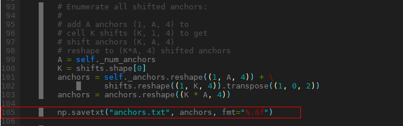

ATC 工具使用指南
前言
本文介绍如何将开源框架的网络模型（如Caffe、Onnx等），通过ATC（Advanced Tensor Compiler）将其转换成图像分析引擎支持的离线模型，模型转换过程中可以实现算子调度的优化、权值数据重排、内存使用优化等，可以脱离设备完成模型的预处理。
与本文档相对应的产品版本如下。
说明：
本文未有特殊说明，Hi3516DV500与Hi3519DV500内容完全一致；Hi3516CV608与Hi3516CV610内容完全一致。
本文档主要适用于以下工程师：
- 技术支持工程师
- 软件开发工程师
掌握以下经验和技能可以更好地理解本文档：
- 熟悉Linux基本命令。
- 对机器学习、图像分析方法有一定的了解。
在本文中可能出现下列标志，它们所代表的含义如下。


修订记录累积了每次文档更新的说明。最新版本的文档包含以前所有文档版本的更新内容。
简介
工具功能架构
ATC工具功能架构如图1所示。从图1中可以看出，用户可以将开源框架网络模型通过ATC工具转换成适配图像分析引擎的离线模型，也可以将转换后的离线模型转成json文件，方便文件查看。用户也可以直接将开源框架网络模型文件通过ATC工具转成json文件。

工具运行流程
使用ATC工具进行模型转换的总体流程如图1所示。

详细流程说明如下：
- 使用ATC工具之前，请先在开发环境安装ATC，获取相关路径下的ATC工具，详细说明请参见“获取ATC工具”中的环境准备。
- 准备要进行转换的模型，并上传到开发环境，详细说明请参见“转换样例”。
- 使用ATC工具进行模型转换，在配置相关参数时，根据实际情况选择是否进行“量化选项”。图像预处理是图像分析引擎提供的硬件图像预处理模块，包括色域转换，图像归一化（减均值/乘系数）功能。
使用入门
准备动作
获取ATC工具
独立安装CANN包，详请请参见《驱动和开发环境安装指南》"2.3.4 软件包安装"。
本手册以ATC独立安装CANN包为例进行说明。
设置环境变量
须知：
- 使用export方式设置环境变量后，环境变量只在当前窗口有效。如果用户之前在.bashrc文件中设置过ATC安装路径的环境变量，则在执行上述命令之前，需要先手动删除原来设置的ATC安装路径环境变量。
- 如果用户之前在.bashrc文件中设置过之前版本ATC安装路径的环境变量，则在执行atc命令之前，需要先手动删除原来设置的ATC安装路径环境变量，然后设置如下环境变量。设置完成后，切换到新窗口执行atc模型转换命令。
必选环境变量（如下环境变量中${install_path}以软件包使用默认安装路径为例进行说明）
export PATH=${install_path}/Ascend/ascend-toolkit/{software version}/atc/bin:$PATH
export LD_LIBRARY_PATH=${install_path}/Ascend/ascend-toolkit/{software version}/atc/third_party_lib:$LD_LIBRARY_PATH
或者执行如下命令配置环境变量。
转换样例
使用高版本ATC工具转换的模型，在低版本环境上使用可能会出现不兼容问题，建议使用匹配的版本重新进行模型转换。
- 以ATC运行用户登录开发环境，并将模型转换过程中用到的模型文件（*.prototxt）、权重文件（*.caffemodel）等上传到开发环境任意路径，例如上传到$HOME_/test/_目录下。
-
执行如下命令生成离线模型。（如下命令中使用的目录以及文件均为样例，请以实际为准）
atc --model=$HOME/test/xxx.prototxt --weight=$HOME/test/xxx.caffemodel --framework=0 --output=$HOME/test/out/xxx --image_list="data:$HOME/test/xxx_image_list.txt" --insert_op_conf="$HOME/test/image_preprocess.txt"关于参数的详细解释以及使用方法请参见“参数说明”。
-
若提示如下信息，则说明模型转换成功。
成功执行命令后，在output参数指定的路径下，可查看离线模型（如：xxx.om）。
说明：
如果用户使用Faster RCNN、YOLOV3、YOLOV2、SSD等Caffe框架网络模型进行模型转换，由于此类网络中包含了一些原始Caffe框架中没有定义的算子结构，如ROIPooling、Normalize、PSROI Pooling和Upsample等。为了使图像分析引擎能支持这些网络，需要对原始的Caffe框架网络模型进行扩展，降低开发者开发自定义算子/开发后处理代码的工作量，详细扩展方法请参见“检测网硬化加速”。
- 以ATC运行用户登录开发环境，并将模型转换过程中使用到的模型文件（*.onnx）等上传到开发环境任意路径，例如$HOME_/test/_目录下。
-
执行如下命令生成离线模型。（如下命令中使用的目录以及文件均为样例，请以实际为准）
atc --model=$HOME/test/xxx.onnx --framework=5 --output=$HOME/test/out/xxx.om –image_list="data:$HOME/test/xxx_image_list.txt"关于参数的详细解释以及使用方法请参见“参数说明”。
-
若提示如下信息，则说明模型转换成功。
成功执行命令后，在output参数指定的路径下，可查看离线模型（如：xxx.om）。
输出文件说明
- *.om: 转换后的模型文件，文件名通过--output配置。
- atc_perf.csv: 预估模型在板端运算时实际计算量。
- calibration_param.txt: 模型使用的量化参数。
- cnn_net_tree_parser.dot：原始模型解析后的算子信息。
- cnn_net_tree_adapt.dot：网络适配后的算子信息。
- cnn_net_tree.dot：网络优化后的算子信息。
-
cnn_net_tree_after_tiling_seg_0.dot：网络深度融合后的算子信息。
说明：
请通过dot命令把*.dot 文件转为pdf文件方便查看，如：dot -Tpdf cnn_net_tree.dot -o cnn_net_tree.pdf。
安装dot命令：apt install graphviz -
mapper_debug.log：转换模型的调试日志。
- mapper_error.log：转换模型的错误日志。
- layer.json：输出原始模型的算子信息，见命令行参数--json。
- shape.json：输出原始模型每个算子的shape信息，见命令行参数--json。
-
om.json：输出转换后的模型信息，见命令行参数--json。
-
模型信息包括但不限于：
- tmp_buf_size：板端运行模型时NPU算子需要的临时缓存。
- aicpu_buf_size：板端运行模型时CPU算子需要的缓存。
- dump_buf_size: 板端运行模型时，dump算子数据时需要的缓存。
- model_param_size：om模型的参数大小。
- atc_version：转换模型时用的ATC版本号。
- batch_num：支持的动态batch数，见命令行参数--batch_num。
-
算子信息包括但不限于：
- name: 算子名。
- type: 算子类型。
- device_type：算子类型是CPU或NPU。
- input_desc：算子输入信息。
- output_desc：算子输出信息。
- data_flow：算子输入、计算、输出的数据类型。
须知：
以下文件包含网络结构等敏感信息，若用户不需要保留这些数据，请及时删除：*.om/*.dot/*.json/mapper_debug.log -
参数说明
概览
总体约束
在进行模型转换前，请务必查看如下约束要求：
- 如果要将Faster RCNN等网络模型转成适配图像分析引擎的离线模型，则务必参见“定制网络修改”先修改prototxt模型文件。
- 支持原始框架类型为Caffe、Onnx的模型转换，输入数据类型为FP32、FP16、INT16、UINT16、INT8、UINT8。
- 当原始框架类型为Caffe时，模型文件（.prototxt）和权重文件（.caffemodel）的层名、层类型必须保持名称一致（包括大小写）。
- 不支持动态shape的输入，例如：NCHW输入为[?,3,?,?]多个维度可任意指定数值。模型转换时需指定固定数值。
- 输入数据默认最大支持四维，有特殊说明的算子，以具体规格说明为准。
- 模型中的所有层算子除const算子外，输入和输出需要满足每个维度不为零。
- 只支持“算子规格说明”中的算子，并需满足算子限制条件。不支持的算子需用户在板端使用CPU实现，把网络切分编译多个om，然后调用板端ACL API串通网络。
- 当模型输入是4维或2维，且第0维>1时，ATC识别第0维为batch，为节省work buffer，把第0维改为1。
- 模型中所有输入输出的名字和算子层的名字都需要小于255个字符。
-
以下参数仅Hi3516CV610 AIISP场景支持，非AIISP模型请勿配置：
--w4_cube_eltwise_merge_enable
--inter_layer_event_opt_enable
--post_processing_high_precision
参数配置方式
ATC 支持2种配置方式，支持同样的参数。
-
文件参数方式：
atc cfg_file
示例：atc test.cfg
-
文件参数格式：
[param1] value1
[param2] value2
…
文件参数格式示例：
[model] test.prototxt
[weight] test.caffemodel
[image_list] image_list.txt
[insert_op_conf] image_preprocess.txt
-
命令行参数方式：
atc param1=value1 param2=value2 ...
示例：
--model=$HOME/test/resnet50.prototxt --weight=$HOME/test/resnet50.caffemodel --image_list=image_list.txt --insert_op_conf=image_preprocess.txt
参数概览
通过atc --help命令查询出所有支持的参数。
基础功能
以下介绍部分常用参数选项，更多选项用法请输入--help。
总体选项
--help
功能说明：显示帮助信息。
关联参数：无
参数取值：无
推荐配置及收益：无
示例：atc --help
依赖约束：无
--version
功能说明：显示ATC版本信息。
关联参数：无
参数取值：无
推荐配置及收益：无
示例：atc --version
依赖约束：无
--mode
功能说明：运行模式。
关联参数：若--mode取值为1或3，则需要与 --om、--json参数配合使用。如果将原始模型文件转换成带shape信息的json文件，则还需要与 --dump_mode参数配合使用。
参数取值：
-
参数值
- 0：生成离线模型。
- 1：离线模型或原始模型文件转json，方便查看模型中的参数信息。
- 3：仅做预检，检查模型文件的内容是否合法。
-
参数值约束：配置为1或3时不会转换离线模型。
- 参数默认值：0
推荐配置及收益：无
示例：
使用atc命令进行模型转换时，命令有两种方式，用户根据实际情况进行选择，本章节以选择第一种方式为例进行说明：
1. atc param1=value1 param2=value2 ...（value值前面不能有空格，否则会导致截断，param取的value值为空）
2. atc param1 value1 param2 value2 ...
依赖约束：无
ATC输入选项
--model
功能说明：原始模型文件路径与文件名。
关联参数：当原始模型为Caffe框架时，需要和--weight参数配合使用。
参数取值：
- 参数值：模型文件路径与文件名。
- 参数值格式：路径和文件名，支持大小写字母（a-z，A-Z）、数字（0-9）、下划线（_）、中划线（-）、句点（.）、中文字符。
推荐配置及收益：无
示例：
依赖约束：无
--weight
功能说明：
- 权重文件路径与文件名。
- 当原始模型是Caffe时需要指定。
关联参数：当原始模型为Caffe框架时，需要和--model参数配合使用。
参数取值：
- 参数值：权重文件路径与文件名。
- 参数值格式：路径和文件名，支持大小写字母（a-z，A-Z）、数字（0-9）、下划线（_）、中划线（-）、句点（.）、中文字符。
推荐配置及收益：无
示例：
依赖约束：无
--om
功能说明：需要转换为json格式的离线模型（.om）、原始模型文件（.prototxt、.onnx）。
关联参数：若--mode=1，则该参数必填，并且需要与 --json参数配合使用。
参数取值：
- 参数值：离线模型（.om）、原始模型文件（.prototxt、.onnx）。
- 参数值格式：路径和文件名，支持大小写字母（a-z，A-Z）、数字（0-9）、下划线（_）、中划线（-）、句点（.）、中文字符。
推荐配置及收益：无
示例：
-
离线模型转换为json
-
原始模型文件转换为json
依赖约束：无
--framework
功能说明：原始框架类型。
关联参数：无
参数取值：
-
参数值：
- 0：Caffe
- 5：ONNX
- 6：ABSTRACT（使用构图接口）
-
参数值约束：当 --mode为1时，该参数可选，可以指定Caffe、Onnx、原始模型转成json，不指定时默认为离线模型转json，如果指定时需要保证--om模型和--framework类型对应一致，例如：
推荐配置及收益：无
示例：
依赖约束：无
--custom_ops_lib
Hi3516CV610不支持自定义算子。
功能说明：自定义算子库文件路径与文件名。如果没有配置--custom_ops_lib，默认从环境变量LD_LIBRARY_PATH中加载名为libsvp_custom.so的自定义算子库。如果配置了--custom_ops_lib，则优先加载--custom_ops_lib。当转换的模型包含自定义算子，而环境变量LD_LIBRARY_PATH没有包含libsvp_custom.so时，必须配置--custom_ops_lib指定自定义算子库，否则转换模型失败。
参数取值：
- 参数值：自定义算子库文件路径与文件名。绝对路径或相对ATC执行的路径。
- 参数值格式：路径和文件名，支持大小写字母（a-z，A-Z）、数字（0-9）、下划线（_）、中划线（-）、句点（.）、中文字符。
推荐配置及收益：无
示例：
依赖约束：无
ATC输出选项
--output
功能说明：如果是开源框架的网络模型，存放转换后的离线模型的路径以及文件名，例如：$HOME/test/out/caffe_resnet18或$HOME/test/out/tf_resnet18，转换后的模型文件名以指定的文件名为准，自动以.om后缀结尾，例如：caffe_resnet18.om。
关联参数：无
参数取值：
- 参数值：如果是开源框架的网络模型：存放转换后的离线模型的路径以及文件名。
- 参数默认值：如果未指定路径或文件名，或以"/"结束，则默认生成inst.om。
- 参数值格式：路径和文件名：支持大小写字母（a-z，A-Z）、数字（0-9）、下划线（_）、中划线（-）、句点（.）、中文字符。
推荐配置及收益：无
示例：
依赖约束：无
--check_report
功能说明：预检结果保存文件路径和文件名。
关联参数：
--mode：当--mode=3仅做预检时，用于生成check_result.json预检结果文件。
参数取值：
- 参数值：预检结果保存文件路径和文件名。
- 参数默认值：无
- 参数值格式：路径和文件名：支持大小写字母（a-z，A-Z）、数字（0-9）、下划线（_）、中划线（-）、句点（.）、中文字符。
推荐配置及收益：无
示例：
依赖约束：无
--json
功能说明：离线模型、原始模型文件、转换为json格式文件的路径和文件名。
关联参数：
-
离线模型转换为json
-
原始模型文件转换为json
该参数需要与--mode=1、--om参数、 --framework配合使用，caffe还需配合--weight使用。
参数取值：
- 参数值：json格式文件的路径和文件名。
- 参数值格式：路径和文件名：支持大小写字母（a-z，A-Z）、数字（0-9）、下划线（_）、中划线（-）、句点（.）、中文字符。
推荐配置及收益：无
示例：
-
离线模型转换为包含模型信息和算子信息的json
-
原始模型文件转换为包含层信息的json
-
原始模型文件转换为包含形状信息的json
依赖约束：无
模型输入选项
--insert_op_conf
功能说明：插入图像预处理的配置。配置了图像预处理的Data层表示输入数据格式为图像，没有配置的为Feature Map。
关联参数：无
参数取值：
- 参数值：插入图像预处理的配置文件路径与文件名。
- 参数值格式：路径和文件名，支持大小写字母（a-z，A-Z）、数字（0-9）、下划线（_）、中划线（-）、句点（.）、中文字符。
推荐配置及收益：无
1. 图像预处理(AIPP:AI Preprocessing)当前支持图像裁剪（crop）、图像边缘填充（padding）、图像缩放（resize）、色域转换、通道数据交换、减均值、乘系数；对于Hi3519DV500芯片，如果图像缩放模式选择为最近邻（nearest），图像预处理按图像裁剪、图像边缘填充、图像缩放、色域转换、通道数据交换、减均值、乘系数顺序执行；如果选择图像缩放模式为线性缩放，图像预处理按图像裁剪、图像边缘填充、色域转换、通道数据交换、减均值、乘系数，图像缩放顺序执行。对于Hi3516CV610芯片，图像预处理按图像裁剪、图像边缘填充、色域转换、通道数据交换、减均值、乘系数，图像缩放顺序执行。
2. 请按原始模型的图像预处理、板端运行时输入的数据格式配置。
3. 模板中参数取值都为默认值，实际使用时，如果配置文件中某些参数未配置，则模型转换时自动设置成该模板中相应参数的默认值。
4. input_format属性为必选属性，其余属性均为可选配置，如果未配置，则模型转换时自动设置成该模板中相应参数的默认值。
5. 模型转换时开启或没有AIPP，在进行推理业务时，输入图片数据都要求为NCHW排布。
6. 图像输入种类。
- 若图像输入为YUV400，要求输入channel为1；
- 若图像输入为UVSP、VUSP，要求输入channel为2；
- 若图像输入为YUV420SP、YVU420SP、YUV422SP、YVU422SP、BGR_PLANAR、RGB_PLANAR、RGB_PACKAGE、BGR_PACKAGE，要求输入channel为3；
- 其他输入格式要求输入channel为4。
7. 在使能AIPP功能时，您只能选择静态AIPP或动态AIPP方式来处理图片，不能同时配置静态AIPP和动态AIPP两种方式，使能AIPP时可以通过aipp_mode参数控制。动态AIPP的参数每次推理需要计算，计算需要耗时，所以动态AIPP的性能比静态AIPP性能要差。
8. 当开启preproc为动态时，需与静态preproc结果一致时，生成离线模型时动态insert_op_conf文件需将静态对应的preproc参数一块配置。
将配置好的_insert_op.cfg_文件上传到ATC工具所在服务器任意目录，例如上传到_/home/test /_，使用示例如下：
依赖约束：无

AIPP规格约束
-
对于Hi3519DV500，Resize模式不同，AIPP的流程顺序也不同。
- 当Resize的模式是nearest时候，流程顺序是Crop、Pad、Resize、色域转换、通道转换、减均值归一化；
- 当Resize的模式是bilinear时候，流程顺序是Crop、Pad、色域转换、通道转换、减均值归一化、Resize。
-
对于Hi3516CV610，AIPP流程顺序统一为：Crop、Pad、色域转换、通道转换、减均值归一化、Resize。
- Crop、Pad、Resize三个操作会改变图像尺寸，经过AIPP处理之后的图片的宽和高，应该与模型文件--input_shape中的宽和高相等。
- 在处理RAW_RGGB、RAW_GRBG、RAW_GBRG、RAW_BGGR图像的时候，Crop和Pad是对原始图像即channel为1的图像进行处理，Resize则是对变成4通道后的数据即channel为4的数据进行处理。假设原始图像的大小为1*1*224*224，Crop的加载坐标以及大小参数分别为[3, 3, 110, 110]，Pad的上下左右补边参数分别是[2, 2, 2, 2]，经过Crop和Pad之后，图像变为1*1*114*114；在进入Resize前，图像会变为4通道：1*4*57*57；因此Resize的input需要填为1*4*57*57，此外Resize的output需要与--input_shape相等。
-
Crop、Pad、Resize静态模式不支持动态分辨率
-
Crop
- 抠图起始位置用load_start_pos_w和load_start_pos_h表示，抠图大小用crop_size_w和crop_size_h表示。
-
抠图起始位置约束
- 要求load_start_pos_w * bitNum为8的倍数，其中bitNum代表图像像素的位宽。
- 要求 load_start_pos_w<src_image_size_w，load_start_pos_h<src_image_size_h。
- 对于YUV420SP、YVU420SP、YUV422SP、YVU422SP的图像，要求取值是偶数。
-
抠图大小约束
- 要求load_start_pos_w + crop_size_w <= src_image_size_w, load_start_pos_h + crop_size_h <= src_image_size_h
- 对于YUV420SP、YVU420SP、YUV422SP、YVU422SP以及RAW_RGGB、RAW_GRBG、RAW_GBRG、RAW_BGGR的图像，要求取值是偶数。
-
Pad
- 上下左右补边分别用top_padding, bottom_padding, left_padding, right_padding
- 要求top_padding, bottom_padding, left_padding, right_padding范围都在[0, 15]
- 对于RAW_RGGB、RAW_GRBG、RAW_GBRG、RAW_BGGR的图像，要求（top_padding+ bottom_padding）的结果为偶数，（left_padding + right_padding）为偶数
- Pad模式包括const_zero、duplicate、reflection、symmetric。对于const_zero模式，当使能Resize的nearest模式，且垂直方向为下采样的时候，即高方向缩放倍数（输出/输入）小于1的时候，top_padding和bottom_padding只能设置为0。对于Hi3516CV610芯片，只支持const_zero和duplicate模式。
- 对于YUV420SP、YVU420SP、YUV422SP、YVU422SP，静态aipp场景，pad要求取值是偶数；动态aipp场景，当resize关闭或者模式为nearest模式的时候，pad要求取值是偶数
-
Resize
-
静态模式
- 支持nearest resize, 宽、高缩放倍数（输出/输入）分别支持 0.25、0.5、1、2。
- 对于Hi3519DV500芯片，bilinear resize支持cube和vector两种模式，区别为不同硬件实现，对于Hi3516CV610芯片，bilinear resize不区分模式。
-
对于Hi3519DV500芯片，支持bilinear resize（cube) : 缩放倍数能用5.5定点数表示，则优先走cube，以获得通常情况下较优的性能。H方向缩放倍数为Hin/Hout，W方向缩放倍数为Win/Wout。5.5定点数，为整数部分使用5位和小数部分使用5位的定点数，该数的整数部分小于32，小数部分乘32后结果为整数。
注：在align_corners模式下，缩放倍数计算公式为(Win-1)/(Wout-1)或(Hin-1)/(Hout-1)。
-
对于Hi3519DV500芯片，支持bilinear resize (vector) : 如果不能使用cube的话，则使用vector。
- 对于Hi3519DV500芯片，为了支持更高精度，用户可配置使用bilinear resize (vector)。
-
动态模式
- 支持nearest resize, 宽、高缩放倍数（输出/输入）分别支持 0.25、0.5、1、2。
- 支持bilinear resize (vector)。
- 输入、输出的分辨率最大值4096。
-
-

AIPP选项
aipp_mode
功能说明：AIPP模式，必须配置。
关联参数：无
参数取值：
-
参数值：dynamic,static
dynamic: 动态AIPP
static: 静态AIPP
-
参数类型：String
示例：
依赖约束：无
related_input_rank
功能说明：标识对模型的第几个输入做图像预处理，从0开始，默认为0。
关联参数：无
参数取值：
- 参数值：0,1......
- 参数默认值：0
- 参数类型：整型
- 参数数值约束：>=0
示例：
依赖约束：无
input_format配置说明
功能说明：板端运行时输入的图像格式或Feature Map，必须配置。
关联参数：无
参数取值：
- 参数值：YUV420SP、YVU420SP、YUV422SP、YVU422SP、YUV400、BGR_PLANAR、RGB_PLANAR、RGB_PACKAGE、BGR_PACKAGE、XRGB_PLANAR、ARGB_PLANAR、XBGR_PLANAR、ABGR_PLANAR、RGBX_PLANAR、RGBA_PLANAR、BGRX_PLANAR、BGRA_PLANAR、XRGB_PACKAGE、ARGB_PACKAGE、XBGR_PACKAGE、ABGR_PACKAGE、RGBX_PACKAGE、RGBA_PACKAGE、BGRX_PACKAGE、BGRA_PACKAGE、RAW_RGGB、RAW_GRBG、RAW_GBRG、RAW_BGGR、UVSP、VUSP。
- 参数类型：enum
-
参数值约束
1.图像输入时shape必须为4d。
2.图像输入与输入channel的对应关系如下：
若图像输入为YUV420SP、YVU420SP、YUV422SP、YVU422SP、BGR_PLANAR， RGB_PLANAR，RGB_PACKAGE， BGR_PACKAGE，要求输入channel为3
若图像输入为YUV400，要求输入channel为1；
若图像输入为UVSP、VUSP，要求输入channel为2；
若图像输入为XRGB_PLANAR、ARGB_PLANAR、XBGR_PLANAR、ABGR_PLANAR、RGBX_PLANAR、RGBA_PLANAR、BGRX_PLANAR、BGRA_PLANAR、XRGB_PACKAGE、ARGB_PACKAGE、XBGR_PACKAGE、ABGR_PACKAGE、RGBX_PACKAGE、RGBA_PACKAGE、BGRX_PACKAGE、BGRA_PACKAGE、RAW_RGGB、RAW_GRBG、RAW_GBRG、RAW_BGGR，要求输入channel为4。
若图像输入为BGR_PLANAR且图像输入channel为1，则会强制将图像输入类型更改为YUV400。
3.FM表示Feature Map。
4.channel在aipp功能后的channel数目。
示例：
依赖约束：无
model_format配置说明
功能说明：模型运行时的色域格式。
关联参数：input_format
参数取值：
- 参数值：RGB、BGR、ARGB、ABGR、RGBA、BGRA、XRGB、XBGR、RGBX、BGRX、RGGB、GRBG、GBRG、BGGR
- 参数类型：enum
-
参数值约束：需要与input_format相匹配
YUV420SP、YVU420SP、YUV422SP、YVU422SP、UVSP、VUSP、BGR_PLANAR、RGB_PLANAR、RGB_PACKAGE、BGR_PACKAGE可取值范围为RGB、BGR;
XRGB_PLANAR、ARGB_PLANAR、XBGR_PLANAR、ABGR_PLANAR、RGBX_PLANAR、RGBA_PLANAR、BGRX_PLANAR、BGRA_PLANAR、XRGB_PACKAGE、ARGB_PACKAGE、XBGR_PACKAGE、ABGR_PACKAGE、RGBX_PACKAGE、RGBA_PACKAGE、BGRX_PACKAGE、BGRA_PACKAGE可取值范围为XRGB、XBGR、RGBX、BGRX;
RAW_RGGB、RAW_GRBG、RAW_GBRG、RAW_BGGR可取值范围为RGGB、GRBG、GBRG、BGGR;
YUV400忽略此配置；
图像格式为灰度图(GRAY)时，不需配置；
Feature Map忽略此配置。
示例：
依赖约束：无
色域转换配置说明
功能说明：用于将输入的图片格式，转换为模型需要的图片格式，静态aipp可选配置，动态aipp无须配置，Feature Map不支持此功能。
关联参数：无
相关参数：
-
csc_switch
功能说明：色域转换开关，静态AIPP配置。
参数类型：bool
取值范围：true/false，true表示开启色域转换，false表示关闭；
示例：
-
matrix_r0c0，matrix_r0c1，matrix_r0c2，matrix_r1c0，matrix_r1c1，matrix_r1c2，matrix_r2c0，matrix_r2c1，matrix_r2c2
功能说明：3*3 CSC矩阵元素
参数类型：int16
取值范围：[-32677, 32676]
示例：
-
output_bias_0，output_bias_1，output_bias_2
功能说明：RGB转YUV时的输出偏移。
参数类型：uint8
取值范围：[0, 255]
示例：
-
input_bias_0，input_bias_1，input_bias_2
功能说明：YUV转RGB时的输入偏移。
参数类型：uint8
取值范围：[0, 255]
示例：
计算规则：
YUV转BGR：
| B | | matrix_r0c0 matrix_r0c1 matrix_r0c2 | | Y - input_bias_r0 | | output_bias_0 |
| G | = (| matrix_r1c0 matrix_r1c1 matrix_r1c2 | | U - input_bias_r1 |) >> 10 + | output_bias_1 |
| R | | matrix_r2c0 matrix_r2c1 matrix_r2c2 | | V - input_bias_r2 | | output_bias_2 |
根据不同的彩色视频数字化标准又可以将视频格式分为BT-601标准清晰度视频格式（定义于SDTV标准中）和BT-709 高清晰度视频格式（定义于HDTV标准中）。针对模型输入的图片或视频，当前给出标清和高清之间的色域转换矩阵。
-
601 yuv标清转rgb高清系数
-
601 yuv标清转rgb标清矩阵系数
-
601 yuv高清转rgb标清矩阵系数
-
601 yuv高清转rgb高清矩阵系数
-
709 yuv标清转rgb高清矩阵系数
-
709 yuv高清转rgb高清矩阵系数
-
709 yuv标清转rgb标清矩阵系数
-
709 yuv高清转rgb标清矩阵系数
依赖约束：只有yuv格式输入支持csc配置；其它格式配置后不生效。
减均值乘系数配置说明
功能说明：减均值、乘系数；均值和系数的通道顺序为按model_format做完通道数据交换后的顺序。由于量化模块需感知均值和系数，因而动态AIPP在量化场景下，也需要配置，配置为在线时典型均值和系数值（注：如果配置的值，和动态AIPP在线传入的值差异较大，可能导致量化误差）。
计算规则：pixel_out_chx(i) = [clip(pixel_in_chx(i), min_chn_i ) - mean_chn_i ] * var_reci_chn
关联参数：无
相关参数：
-
mean_chn_0，mean_chn_1，mean_chn_2，mean_chn_3
功能说明：每个通道的均值，可选。
参数类型：float32
取值范围：[-65504.0, 65504.0]
示例：
-
var_reci_chn_0，var_reci_chn_1，var_reci_chn_2，var_reci_chn_3
功能说明：每个通道的系数，可选。
参数类型：float32
取值范围：[0, 65504]
示例：
-
min_chn_0，min_chn_1，min_chn_2，min_chn_3
功能说明：每个通道的最小值。
参数类型：float32
取值范围：[-65504.0, 65504.0]
示例：
依赖约束：当input_format参数为FM时，只使用第一组通道系数；当输入大于4维时，可只配置一组通道系数。Hi3516CV610不支持逐通道配置最小值，只会对所有通道统一使用min_chn_0作为最小值。
原始图像宽高
功能说明：原始图像的宽度、高度；静态aipp可选配置，动态aipp无须配置。
关联参数：无
参数取值：
-
相关参数值：
src_image_size_w: 原始图像的宽度。
src_image_size_h: 原始图像的高度。
-
参数类型：int32
-
参数值约束：
宽度取值范围为[2,4096]；高度取值范围为[1,4096]，对于YUV420SP_U8类型的图像，要求原始图像的宽和高取值是偶数。
请根据实际图片的宽、高配置src_image_size_w和src_image_size_h；只有crop，resize，padding功能没有开启的场景，src_image_size_w和src_image_size_h才能不配置，该场景下会取网络模型输入定义的w和h。
在处理RAW_RGGB、RAW_GRBG、RAW_GBRG、RAW_BGGR图像的时候，aipp的原始图像输入的通道数为1，src_img_size_w，src_img_size_h须按照通道数为1的图像进行设置的。进行aipp处理之后，数据会变成4通道，aipp处理的结果须与--input_shape一致，因此--input_shape须按照通道数为4的数据进行配置。例如src_image_size_w为256，src_image_size_h为128，crop，resize，padding功能没有开启，则--input_shape的shape配置为1,4,64,128。RAW输入的其他处理规则请见AIPP规格约束。
示例：
依赖约束：无
最大图像宽高
功能说明：输入图像的最大宽度、高度；静态aipp无须配置，动态aipp必须配置。
关联参数：无
参数取值：
-
相关参数值：
max_src_image_size_w: 最大输入图像的宽度。
max_src_image_size_h: 最大输入图像的高度。
-
参数类型：int32
-
参数值约束：
宽度取值范围为[2,4096]；高度取值范围为[1,4096]，对于YUV420SP_U8类型的图像，要求原始图像的宽和高取值是偶数。
示例：
依赖约束：无
crop配置说明
功能说明：AIPP处理时是否支持抠图，静态aipp可选配置，动态aipp无须配置。
关联参数：无
相关参数：
-
crop
功能说明：crop转换开关，静态AIPP配置。
参数类型：bool
取值范围：true/false，true表示开启crop，false表示关闭；
示例：
-
load_start_pos_w, load_start_pos_h
功能说明：抠图起始位置水平、垂直方向坐标，抠图大小为网络输入定义的w和h。
参数类型：int32
取值范围：[0,4095]; load_start_pos_w<src_image_size_w，load_start_pos_h<src_image_size_h;
示例：
-
crop_size_w, crop_size_h
功能说明：抠图后的图像size。
参数类型：int32
取值范围：[0,4096]; load_start_pos_w + crop_size_w <= src_image_size_w、load_start_pos_h + crop_size_h <= src_image_size_h;
示例：
依赖约束：仅支持shape维度为4
resize配置说明
功能说明：AIPP处理时是否支持缩放，静态aipp可选配置，动态aipp无须配置。
关联参数：无
相关参数：
-
resize
功能说明：resize转换开关，静态AIPP配置。
参数类型：bool
取值范围：true/false，true表示开启resize，false表示关闭。
示例：
-
resize_mode
功能说明：缩放的方式，静态AIPP配置。
参数类型：enum
取值范围：
对于Hi3519DV500芯片，取值范围为：nearest, linear_vector, linear_cube。其中linear_vector和linear_cube都是双线性插值，区别在于linear_vector使用vector逻辑单元进行处理，而linear_cube使用cube逻辑单元进行处理。
备注：若linear不满足使用cube逻辑单元的条件，但是强制配置为linear_cube，会回退为linear_vector。linear_cube条件请参考前文描述。
对于Hi3516CV610，取值范围为：nearest，linear。
示例：
-
resize_input_w, resize_input_h, resize_output_w, resize_output_h
功能说明：缩放后和缩放前图像的宽度和高度。
参数类型：int32
取值范围：resize_output_h：[16,4096]；resize_output_w：[16,1920]；resize_output_w/resize_input_w∈[1/16,16]、resize_output_h/resize_input_h∈[1/16,16];
示例：
-
coordinate_trans_mode
功能说明：坐标轴转换的方式。
参数类型：enum
参数默认值：align_corners
取值范围：静态AIPP，resize_mode为linear_vector, linear_cube支持half_pixel, pytorch_half_pixel, asymmetric, align_corners；动态AIPP支持asymmetric, align_corners。其中asymmetric模式与opencv的双线性插值对应，pytorch_half_pixel模式与pytorch的resize对应。
示例：
依赖约束：仅支持shape维度为4
padding配置说明
功能说明：AIPP处理时是否支持padding，静态aipp可选配置，动态aipp无须配置。
关联参数：无
相关参数：
-
padding
功能说明：padding转换开关，静态AIPP配置。
参数类型：bool
取值范围：true/false，true表示开启padding，false表示关闭。
示例：
-
padding_mode
功能说明：padding的方式，静态AIPP配置。
参数类型：enum
取值范围：
- const_zero：常量填充。
- duplicate：复制填充。(对于Hi3516CV610芯片，当input_format为RGB_PACKAGE、BGR_PACKAGE、RAW_RGGB、RAW_GRBG、RAW_GBRG、RAW_BGGR、UVSP、VUSP时不支持)
- reflection：镜像填充（Hi3516CV610芯片不支持）。
- symmetric：对称填充（Hi3516CV610芯片不支持）。
示例：
-
left_padding_size, right_padding_size, top_padding_size, bottom_padding_size
功能说明：H和W的填充值，静态AIPP配置，上下左右四个值不能缺省。
参数类型：int32
取值范围：[0,15]。（对于Hi3516CV610芯片，当input_format为RGB_PACKAGE、BGR_PACKAGE时，left_padding_size和right_padding_size的取值范围为[0,5]）
示例：
参数值约束：
padding模式为reflection时，H和W的填充值需小于填充前的H和W；padding模式为symmetric时，H和W的填充值需不大于填充前的H和W；
依赖约束：仅支持shape维度为4。
静态AIPP配置项
## 图像预处理的配置以aipp_op开始，标识这是AIPP算子的配置。
aipp_op {
aipp_mode: static
related_input_rank: 0
input_format: BGR_PLANAR
model_format: BGR
src_image_size_w: 16
src_image_size_h: 16
## crop参数设置
crop: false
load_start_pos_w: 0
load_start_pos_h: 0
crop_size_w: 16
crop_size_h: 16
## resize参数设置
resize: false
resize_mode: nearest
resize_input_w: 16
resize_input_h: 16
resize_output_w: 32
resize_output_h: 32
## padding参数设置
padding: false
padding_mode: const_zero
left_padding_size: 0
right_padding_size: 0
top_padding_size: 0
bottom_padding_size: 0
## 色域转换开关，静态AIPP配置
csc_switch: false
matrix_r0c0: 298
matrix_r0c1: 516
matrix_r0c2: 0
matrix_r1c0: 298
matrix_r1c1: -100
matrix_r1c2: -208
matrix_r2c0: 298
matrix_r2c1: 0
matrix_r2c2: 409
output_bias_0: 16
output_bias_1: 128
output_bias_2: 128
input_bias_0: 16
input_bias_1: 128
input_bias_2: 128
## 减均值、乘系数设置
mean_chn_0: 0
mean_chn_1: 0
mean_chn_2: 0
mean_chn_3: 0
var_reci_chn_0: 1.0
var_reci_chn_1: 1.0
var_reci_chn_2: 1.0
var_reci_chn_3: 1.0
min_chn_0: 0
min_chn_1: 0
min_chn_2: 0
min_chn_3: 0
}
下面以插入图像预处理算子为例进行说明，静态配置文件内容示例如下（文件名为举例为：insert_op.cfg）。
aipp_op {
#第一个输入
related_input_rank:0
aipp_mode:static
input_format:YUV420SP
model_format:RGB
# 以pytorch的预处理为例，如torchvision.transforms.Normalize(mean=[0.485, 0.456, 0.406], std=[0.229, 0.224, 0.225])，
# 即 y = (x/255 - mean)/std = (x - 255*mean) * 1/(255*std)
# 所以 mean_chn_x = 255*mean, var_reci_chn_x = 1/(255*std)
mean_chn_0:123.675
mean_chn_1:116.28
mean_chn_2:103.53
var_reci_chn_0:0.01712475
var_reci_chn_1:0.017507002
var_reci_chn_2:0.01742919
## 第二个输入
related_input_rank:1
input_format:RGB_PLANAR
model_format:BGR
# 以Caffe 的ImageData层预处理为例：
#transform_param {
# scale: 0.0078125
# mean_value: 104.0
# mean_value: 117.0
# mean_value: 123.0
#}
# 即 y = (x - mean_value) * scale,
# 所以 mean_chn_x = mean_value, var_reci_chn_x = scale
mean_chn_0:104
mean_chn_1:117
mean_chn_2:126
var_reci_chn_0:0.0078125
var_reci_chn_1:0.0078125
var_reci_chn_2:0.0078125
}
动态AIPP配置项
## 图像预处理的配置以aipp_op开始，标识这是AIPP算子的配置。
aipp_op {
aipp_mode: dynamic
related_input_rank: 0
input_format : BGR_PLANAR
model_format : BGR
max_src_image_size_w:16
max_src_image_size_h:16
#说明：可通过命令行--input_csc_enable=OFF,--input_channel_order_enable=OFF,--input_crop_enable=OFF,--input_preprocess_enable=OFF, --input_resize_enable=OFF，--input_padding_enable=OFF关闭动态AIPP功能；当padding为动态时，可通过命令行设置--input_padding_info=layername：top_padding_size，bottom_padding_size，left_padding_size，right_padding_size设置其最大padding_info信息，否则为默认值[6, 6, 6, 6]。
}
备注：若使用在线均值方差功能，量化时由于需要感知均值方差，需送入均值方差处理后的数据作为量化输入。
下面以插入图像预处理算子为例进行说明，动态配置文件内容示例如下（文件名举例为：insert_op.cfg）。
aipp_op {
#第一个输入
related_input_rank:0
aipp_mode:dynamic
input_format:YUV420SP
model_format:RGB
max_src_image_size_w:16
max_src_image_size_h:16
#第二个输入
related_input_rank:1
aipp_mode:dynamic
input_format:YUV420SP
model_format:RGB
max_src_image_size_w:16
max_src_image_size_h:16
}
--input_csc_enable
功能说明：动态AIPP会开启所有的AIPP功能，如果在线色域转换不需使用，可以通过该选项进行关闭
关联参数：--insert_op_conf
参数取值：
- 参数值：OFF
- 参数值约束：只能为OFF
推荐配置及收益：无
示例：
依赖约束：无
--input_channel_order_enable
功能说明：动态AIPP会开启所有的AIPP功能，如果在线通道转换不需使用，可以通过该选项进行关闭
关联参数：--insert_op_conf
参数取值：
- 参数值：OFF
- 参数值约束：只能为OFF
推荐配置及收益：无
示例：
依赖约束：无
--input_preprocess_enable
功能说明：动态AIPP会开启所有的AIPP功能，如果在线均方差不需使用，可以通过该选项进行关闭
关联参数：--insert_op_conf
参数取值：
- 参数值：OFF
- 参数值约束：只能为OFF
推荐配置及收益：无
示例：
依赖约束：无
--input_resize_enable
功能说明：动态AIPP会开启所有的AIPP功能，如果在线resize不需使用，可以通过该选项进行关闭
关联参数：--insert_op_conf
参数取值：
- 参数值：OFF
- 参数值约束：只能为OFF
推荐配置及收益：无
示例：
依赖约束：无
--input_padding_enable
功能说明：动态AIPP会开启所有的AIPP功能，如果在线补边不需使用，可以通过该选项进行关闭
关联参数：--insert_op_conf
参数取值：
- 参数值：OFF
- 参数值约束：只能为OFF
推荐配置及收益：无
示例：
依赖约束：无
--input_crop_enable
功能说明：动态AIPP会开启所有的AIPP功能，如果在线裁剪不需使用，可以通过该选项进行关闭
关联参数：--insert_op_conf
参数取值：
- 参数值：OFF
- 参数值约束：只能为OFF
推荐配置及收益：无
示例：
依赖约束：无
--input_padding_info
功能说明：指定动态AIPP Padding的最大可能补边数。
关联参数：--insert_op_conf
参数取值：
- 参数值：格式为op_name:top_padding_size,bottom_padding_size,left_padding_size,right_padding_size
- 参数值约束：padding的范围为[0,15]
- 参数默认值：默认[6,6,6,6]
推荐配置及收益：无
示例：
依赖约束：无
--image_data_bits
功能说明：指定输入RAW图像格式的数据位宽。
关联参数：--insert_op_conf 配置Data层输入为RAW图像格式，即input_format为RAW_RGGB、RAW_GRBG、RAW_GBRG、RAW_BGGR，此配置才生效。
参数取值：
-
参数值：
- Hi3519DV500：{8,10,12,14,16}
- Hi3516CV610：{8}
-
参数值约束：所有RAW图像格式输入共用1个配置。
- 参数默认值：8。
推荐配置及收益：无
示例：
依赖约束：无
--bit_compact_layer
功能说明：指定输入YUV400图像格式的是否为4bit紧密排布。
关联参数：--insert_op_conf 配置Data层输入为YUV400图像格式，即input_format为YUV400，此配置才生效。
参数取值：
- 参数值：字符串。网络模型中的节点（node_name）名称
- 参数默认值：不使能。
推荐配置及收益：无
示例：
依赖约束：Hi3516CV610不支持。
--input_type
功能说明：指定网络Data层的输入数据类型，只用于Feature map 输入的Data层，不能用于图片输入的Data层。
关联参数：--insert_op_conf未配置Data层输入为图片格式，即输入为Feature map时，才可以指定输入数据类型。
参数取值：
-
参数值：格式为op_name:data_type
- op_name：指定算子的层名，必须为Data层。
- data_type：支持数据类型FP16, FP32, INT16, INT8, S16, S8, U16, U8, UINT16, UINT8。
-
参数值约束：指定多个输入数据类型时，使用英文分号隔开，用双引号括住。如：--input_type="data0:INT8;data1:FP16"。
- 参数默认值：Feature map未指定数据类型时，默认FP32。
推荐配置及收益：无
示例：
依赖约束：无
--input_shape
功能说明：指定模型输入数据的shape。
关联参数：--dynamic_image_size
参数取值：
-
参数值：
模型输入的shape信息，例如："input_name1:n1,c1,h1,w1;input_name2:n2,c2,h2,w2"。指定的节点必须放在双引号中，节点中间使用英文分号分隔。input_name必须是转换前的网络模型中的节点名称。
当某个输入需要支持动态分辨率时，需要将其h、w设置为-1。
-
参数值约束：
设置为固定取值，例如，取值为“1，2，3...”，用于将输入数据某个维度不固定的原始模型转换为固定维度的离线模型。
推荐配置及收益：无
示例：
依赖约束：input_shape需要与image_list的量化校准文件数据匹配。
--input_format
功能说明：输入数据格式。
关联参数：无
参数取值：
- 参数值：只支持NCHW。
- 参数默认值：默认为NCHW。
- 参数值约束：无
推荐配置及收益：无
示例：
依赖约束：无
模型输出选项
--output_type
功能说明：指定网络输出数据类型或指定输出节点的输出类型。
关联参数：
若指定某个输出节点的输出类型，则需要和--out_nodes参数配合使用。
参数取值：
-
参数值：支持两种格式。
格式1：data_type, 表示指定所有输出节点的输出数据类型。
格式2：op_name:output_index:data_type，表示指定某个输出节点的某个输出的输出数据类型。
- op_name：指定算子的层名，必须为--out_nodes指定的输出层。
- output_index：指定输出层的第几个输出。
- data_type：支持数据类型FP16, FP32, INT16, INT8, S16, S8, U16, U8, UINT16, UINT8。
-
参数默认值：FP32
推荐配置及收益：无
示例：
-
指定网络输出类型
-
指定某个输出节点的输出类型
依赖约束：AICPU算子只支持输出FP32。
--out_nodes
功能说明：指定输出节点。当用户想要查看网络中间某层算子的输出时，则需要指定输出此算子。模型的最后一层默认输出，不需要指定。
关联参数：无
参数取值：
-
参数值：
- 网络模型中的节点（node_name）名称。
- 指定的输出节点必须放在双引号中，节点中间使用英文分号分隔。node_name必须是模型转换前的网络模型中的节点名称，冒号后的数字表示第几个输出，例如node_name1:0，表示节点名称为node_name1的第1个输出。
-
参数值约束：
- 如果模型转换过程中该算子被离线计算融合掉，则该算子不能作为输出节点，配置不生效。
- 没有实际运算而被优化删除的算子，不能作为输出节点，配置不生效。如Cast, Dropout算子。
- 配置的输出节点的顺序与最后输出的顺序无关。
- 即使最后一层的节点没有被指定，也一定会被输出。
- 支持最大输入节点和输出节点加起来不能超过32个。
推荐配置及收益：无
示例：
参数值取网络模型中的节点（node_name）名称。
依赖约束：无
--image_report_name
功能说明：指定网络某个输出为图像格式。
关联参数：--out_nodes，--image_report_bit，--image_report_type。
参数取值：指定网络输出算子的层名，必须为--out_nodes指定的输出层。
参数值约束：不能配置为data层或preprocessMerge的算子层。
推荐配置及收益：无
示例：
指定conv1输出，且为12bit的RGGB图像格式
--image_report_bit
功能说明：指定输出RAW图像格式的数据位宽。
关联参数：--image_report_type 配置为RGGB、GRBG、GBRG、BGGR时此配置才生效。
参数取值：
- 参数值：8，10，12，14，16
- 参数默认值：8
推荐配置及收益：无
依赖约束：Hi3516CV610不支持参数值为10或者14。
示例：
指定conv1输出，且为12bit的RGGB图像格式
--image_report_type
功能说明：图像格式输出的类型
关联参数：--out_nodes，--image_report_name，--image_report_bit，--output_rgb_order，RGB_order
参数取值：
- 参数值：RGGB、GRBG、GBRG、BGGR、UVSP、VUSP、YUV400、BGR_PLANAR、RGB_PLANAR、RGB_PACKAGE、BGR_PACKAGE、XRGB_PLANAR、XBGR_PLANAR、RGBX_PLANAR、BGRX_PLANAR、XRGB_PACKAGE、XBGR_PACKAGE、RGBX_PACKAGE、BGRX_PACKAGE
- 参数默认值：RGGB
-
参数值约束：
1.图像输出时shape必须为4d。
2.若图像输出为YUV400，要求输出channel为1；
若图像输出为UVSP，VUSP，要求输出channel为2；
若图像输出为 BGR_PLANAR， RGB_PLANAR，RGB_PACKAGE， BGR_PACKAGE，要求输出channel为3；
其他输出格式要求输出channel为4。
3.参数值必须与RGB_order或--output_rgb_order相匹配，详见RGB_order和--output_rgb_order。
Hi3516CV610仅支持RGGB、GRBG、GBRG、BGGR。
推荐配置及收益：无
示例：
指定conv1输出，且为12bit的RGGB图像格式
--out_nodes=conv1:0 --image_report_name=conv1 --image_report_bit=12 --image_report_type=RGGB --output_rgb_order=RGGB
--output_rgb_order
功能说明：模型输出数据做通道转换前的通道顺序。
关联参数：--image_report_type
参数取值：
- 参数值：字符串。取值范围{RGB、BGR、XRGB、RGBX、XBGR、BGRX、RGGB、GRBG、GBRG、BGGR}
- 参数默认值：RGB
参数值约束:
-
配置值需和image_report_type的类型匹配：
UVSP、VUSP、BGR_PLANAR、RGB_PLANAR、RGB_PACKAGE、BGR_PACKAGE可取值范围为RGB、BGR;
XRGB_PLANAR、XBGR_PLANAR、RGBX_PLANAR、BGRX_PLANAR、XRGB_PACKAGE、XBGR_PACKAGE、RGBX_PACKAGE、BGRX_PACKAGE可取值范围为XRGB、XBGR、RGBX、BGRX
RAW_RGGB、RAW_GRBG、RAW_GBRG、RAW_BGGR可取值范围为RGGB、GRBG、GBRG、BGGR
YUV400忽略此配置。
-
多个输出时，共用一个配置。
- 不能与RGB_order同时配置。
- Hi3516CV610仅支持RGGB、GRBG、GBRG、BGGR。
推荐配置及收益：无
示例：
依赖约束：image_report_type配置时才生效。
--output_reorder
功能说明：转换后的模型输出节点顺序和原始模型是否保持一致。
关联参数：无
参数取值：
-
参数值：[0,1]
- 0：转换后的模型输出节点与原始模式保持一致。
- 1：转换后的模型输出节点重新排列，与原始模式可能不一致。
-
参数默认值：1
示例：
依赖约束：无
量化选项
--gfpq_param_file
功能说明：GFPQ(Grouped Floating Point Quantization)分组量化参数配置文件。AMCT校准或retrain输出此文件，如quant_param_record.txt。ATC转换模型校准时输出此文件，如calibration_param.txt。
关联参数：
--model：当输入模型为定点模型时，必须配置此参数。定点模型即AMCT校准后输出权重参数为定点的模型。
参数取值：参数值：protobuf格式的文件路径，支持txt和bin格式。
文件格式定义：Proto定义
syntax = "proto2";
package calibration;
enum DataType {
S4 = 0;
U4 = 1;
S8 = 2;
U8 = 3;
S16 = 4;
U16 = 5;
F16 = 6;
S32 = 7;
U32 = 8;
F32 = 9;
}
message FactorParam
{
required DataType data_type = 1 [default = S8];
repeated float scale = 2;
repeated float offset = 3;
optional bytes params = 4;
}
message QuantParam
{
repeated FactorParam input = 1;
optional FactorParam weight = 2;
}
message LayerParam
{
required string name = 1;
optional DataType calc_data_type = 2 [default = S8];
required QuantParam quant_param = 3;
}
message CalibrationParam
{
optional uint32 version = 1 [default = 65536];
repeated LayerParam layer = 2;
}
示例：
version: 65536
layer {
name: "conv1"
calc_data_type: S8
quant_param {
input {
data_type: S8
scale: 12.75
offset: -77
}
weight {
data_type: S8
scale: 127
}
}
}
推荐配置及收益：
- 配置量化参数后，ATC不需要再校准，节省转换模型的时间。
- 使用AMCT重训或校准后的quant_param_record.txt，精度更好。
示例：
依赖约束：Hi3516CV610不支持VEC层配置高精度。
--image_list
功能说明：转换模型生成量化参数时用的校准数据。支持Feature map文本和二进制格式文件和图片格式文件。
关联参数：
- --model：当输入模型为定点模型时，不需要配置此参数。
- --gfpq_param_file：配置了所有层的量化参数时，不需要配置此参数。已配置量化参数的层，不校准，只使用image_list做forward。
- --dump_data：需要导出校准数据时，必须配置此参数。
- --input_type：校准数据使用二进制文件时，需要文件的数据类型和--input_type匹配，如果没有配置，默认FP32。
- --insert_op_conf：配置了图像预处理的Data层使用图片文件格式，没有则使用Feature map格式。
参数取值：
- 参数值：输入的层名和校准数据的文件路径。
-
参数值格式：多输入时，使用半角分号“;”隔开，用双引号括住。示例：
--image_list="name1:file1;name2:file2"
此外，多输入时，也可以使用多个image_list分别输入。示例：
--image_list="name1:file1"
--image_list="name2:file2"
-
文件格式：
-
--insert_op_conf没有配置图像预处理时，即输入为Feature map。
-
文本文件：
文件内容为浮点文本数据，数据间以空格或逗号分隔，一行的数据个数为输入形状channel × height × width。一行表示一个batch。示例：
输入形状 3×2×2，4个batch。即一行12个数据，共4行。feature_map.txt：
-
二进制文件：
文件内容为数据值的二进制，文件名必须以“.bin”为后缀。数据类型需要和--input_type匹配。
如需跑多batch，需将多个batch的输入按顺序存放到同一个".bin"文件中。
-
-
--insert_op_conf配置图像预处理，即输入为图片时，文件内容为图片文件路径，一行一个图片文件路径，一行表示一个batch。图片大小不限，ATC根据输入的height × width缩放。
图片文件路径支持以下三种。
- 绝对路径；
- 相对--image_list的路径；
- 相对ATC执行的路径。
示例：testcase/image_list.txt，3个batch配置3个图片文件。
--insert_op_conf图像预处理配置的input_format为YUV420SP、YVU420SP、YUV422SP、YVU422SP、YUV400、BGR_PLANAR、RGB_PLANAR、RGB_PACKAGE、BGR_PACKAGE、XRGB_PLANAR、ARGB_PLANAR、XBGR_PLANAR、ABGR_PLANAR、RGBX_PLANAR、RGBA_PLANAR、BGRX_PLANAR、BGRA_PLANAR、XRGB_PACKAGE、ARGB_PACKAGE、XBGR_PACKAGE、ABGR_PACKAGE、RGBX_PACKAGE、RGBA_PACKAGE、BGRX_PACKAGE、BGRA_PACKAGE时，使用图片路径文本格式，支持图片后缀bmp、jpeg、jpg、jpe、jp2、png。
--insert_op_conf图像预处理配置的input_format为RAW_RGGB、RAW_GRBG、RAW_GBRG、RAW_BGGR时，使用浮点文本格式，数据排列格式为RAW图像通道拆分前的顺序。
示例：输入4×2×2的RAW_RGGB, 通道拆分前的顺序：
通道拆分后的数据：
即：
通过image_type配置输入数据类型时，image_type为0，18，19，20，21，24，25时输入文件内容为浮点文本数据，其他情况下输入文件内容为图片文件路径。
推荐配置及收益：校准时需要的图片是典型场景图片，建议从网络模型的测试场景随机选择3~5张作为参考图片进行量化，选择的图像要尽量覆盖模型的各个场景（图像要包含分类或检测的目标，如分类网的目标是苹果、梨、桃子，则参考图像至少要包含苹果、梨、桃子。比如检测人、车的模型，参考图像中必须有人、车，不能仅使用人或者无人无车的图像进行量化）。图片影响校准生成量化参数，选择典型场景的图片计算出来的量化参数对典型场景的量化误差越小。所以请不要选择偏僻场景、过度曝光、纯黑、纯白的图片，请选择识别率高，色彩均匀的典型场景图片。
示例：
依赖约束：无
-
--compile_mode
功能说明：编译模式，量化后的数据bit位宽，参数值0和1不影响权重量化的bit位宽，权重固定是8bit量化。参数值3和4将权重量化成4bit，以用于整网的性能测试，实际使用时需要4bit重训。
关联参数：
--gfpq_param_file：优先使用配置的量化参数。未配置量化参数时，compile_mode才生效。
参数取值：
-
参数值
- 0：A8W8，使用8bit量化数据和权重。
- 1：A16W8，使用16bit量化数据，使用8bit量化权重。
- 2：预留值。
- 3：A4W4，使用4bit量化数据和权重，该参数值用于测试整网A4W4的性能。Hi3519DV500不支持配置该值。
- 4：A8W4，使用8bit量化数据，使用4bit量化权重，该参数值用于测试整网A8W4的性能。Hi3519DV500不支持配置该值。
- 5：数据和权重量化使用8bit，且仅对CUBE算子进行量化，非CUBE算子使用fp16格式。
-
6：数据量化使用16bit，权重量化使用8bit，且仅对CUBE算子进行量化，非CUBE算子使用fp16格式。
CUBE算子：Conv,ConvTranspose,DepthwiseConv,InnerProduct,Gemm,MatMul,Pooling系列算子。
-
参数值约束：无
- 参数默认值：0
推荐配置及收益：
- 配置为0时，带宽小，板端缓存小，耗时少，精度损失大。
- 配置为1时，带宽大，板端缓存大，耗时大，精度损失小。
- 配置为5时，带宽、板端缓存、耗时比模式0大，比模式1和6小；精度损失比模式0小，与模式1相比则和网络结构相关，若网络中含有大量的非CUBE算子，则此模式可能精度损失更小。
- 配置为6时，带宽大，板端缓存大，耗时大，精度损失很小。
示例：
依赖约束：无
--weight_quant_per_channel
功能说明：权重是否每个卷积单独量化，对应一组量化参数。只有Convolution和Deconvolution 支持。
关联参数：
--gfpq_param_file：优先使用配置的量化参数。未配置量化参数时, --weight_quant_per_channel才生效。
参数取值：
-
参数值
- 0：去使能。
- 1：使能。
-
参数默认值：1
推荐配置及收益：配置为1时，权重量化粒度细，精度更好。
示例：
依赖约束：无
--quant_mode
功能说明：量化算法模式
-
参数取值：
- 0：使用默认量化算法，linear_quant
- 1：数据和权重使用不同的量化算法，其中数据使用ifmr算法进行量化，权重使用arq算法进行量化
-
参数值约束：无
- 参数默认值：0
示例：
依赖约束：无
--high_precision_layer
功能说明：高精度层配置。如果配置的层是CUBE算子，该算子会进行量化，数据量化使用16bit，权重量化使用8bit，如果是非CUBE算子，则使用fp16格式。
CUBE算子：Conv,ConvTranspose,DepthwiseConv,InnerProduct,Gemm,MatMul,Pooling系列算子。
-
参数取值：字符串。网络模型中的节点（node_name）名称的集合。
-
推荐配置及收益：无
-
示例：其中opName0、opName1、opName2为需要配置的节点在网络模型中的名称
--concat_auto_fallback_to_fp16
功能说明：当concat多路输入的数值范围差距较大时，进行量化可能会增大量化误差，此时将concat的量化类型自动回退成fp16，防止量化误差增大。
关联参数：无
参数取值：
-
参数值：
0：去使能
1：使能
-
参数默认值：1
推荐配置及收益：配置为1时，可避免因concat多路输入数值范围差距大引起的量化误差。
示例：
依赖约束：Hi3519DV500不支持
--output_quantized
功能说明：当--output_type配置为S8、U8、S16或者U16的时候是否做量化。
关联参数：--gfpq_param_file：配置量化参数时, --output_quantized不生效。
参数取值：
-
参数值：
- 0：去使能
- 1：使能
-
参数默认值：0
示例：
--all_batch_quant_together_enable
功能说明：量化时，是否所有batch一起进行量化参数计算。
参数取值：
-
参数值：
- 0：去使能
- 1：使能
-
参数默认值：0
示例：
--matmul_per_channel_enable
功能说明：权重是否每通道单独量化，对应一组量化参数。只有Matmul、Innerproduct、Gemm 支持。
关联参数：
--gfpq_param_file：优先使用配置的量化参数。未配置量化参数时, --matmul_per_channel_enable才生效。
--weight_quant_per_channel：当该配置为0时，--matmul_per_channel_enable不生效
参数取值：
-
参数值
- 0：去使能。
- 1：使能。
-
参数默认值：0
推荐配置及收益：配置为1时，权重量化粒度细，精度更好。
示例：
依赖约束：Hi3516CV610不支持
--data_symmetric_quant_enable
功能说明：数据量化是否使用对称量化。
关联参数：--gfpq_param_file：配置量化参数时, --data_symmertric_quant_enable不生效。
参数取值：
-
参数值：
- 0：去使能
- 1：使能
-
参数默认值：0
示例：
依赖约束：Hi3516CV610不支持
RPN硬化层选项
--nms_threshold
功能说明：Nms层阈值，只用于ATC量化校准时的RPN硬化层，板端推理时不使用此值。仅Hi3519DV500 YOLOV3/V4/V5/V7支持配置多个nms_threshold阈值，且最大支持80类阈值配置，当配置多个阈值时，启动多类别多阈值功能。
关联参数：无
参数取值：
- 参数值：[0,1)
- 参数默认值：0.75
推荐配置及收益：无
示例：
依赖约束：无
--low_score_threshold
功能说明：Filter层最低分数阈值，只用于ATC量化校准时的RPN硬化层，板端推理时不使用此值。仅Hi3519DV500 YOLOV3/V4/V5/V7支持配置多个low_score_threshold阈值，且最大支持80类阈值配置，当配置多个阈值时，启动多类别多阈值功能。
关联参数：无
参数取值：
- 参数值：[0,1)
- 参数默认值：0.5
推荐配置及收益：无
示例：
依赖约束：无
--min_width
功能说明：Filter层最低宽度阈值。仅19DV500 YOLOV3/V4/V5/V7支持配置多个min_width阈值，且最大支持80类阈值配置，当配置多个阈值时，启动多类别多阈值功能。
关联参数：无
参数取值：
- 参数值：[1,4096]
- 参数默认值：1
推荐配置及收益：无
示例：
依赖约束：无
--min_height
功能说明：Filter层最低高度阈值。仅Hi3519DV500 YOLOV3/V4/V5/V7支持配置多个min_height阈值，且最大支持80类阈值配置，当配置多个阈值时，启动多类别多阈值功能。
关联参数：无
参数取值：
- 参数值： [1,4096]
- 参数默认值：1
推荐配置及收益：无
示例：
依赖约束：无
--image_width
功能说明：
网络包含RPN硬化层，输入为Feature map，不是图片时，需指定原图的宽。
关联参数：无
参数值：[1,4096]
推荐配置及收益：无
示例：
依赖约束：无
--image_height
功能说明：网络包含RPN硬化层，输入为Feature map，不是图片时，需指定原图的高。
关联参数：无
参数值：[1,4096]
推荐配置及收益：无
示例：
依赖约束：无
--generate_anchors_file
功能说明：锚点坐标文件。使用硬化层的Faster RCNN、RFCN、SSD网络必须配置。
关联参数：无
参数取值：
- 参数值：anchors文件路径与文件名。
- 参数值格式：路径和文件名：支持大小写字母（a-z，A-Z）、数字（0-9）、下划线（_）、中划线（-）、句点（.）、中文字符。
-
文件内容的格式：
-
Faster RCNN和RFCN锚点坐标文件每行内容为“xmin, ymin, xmax, ymax”，如下：
-84.000000 -40.000000 99.000000 55.000000 -176.000000 -88.000000 191.000000 103.000000 -360.000000 -184.000000 375.000000 199.000000 -56.000000 -56.000000 71.000000 71.000000 ……请参考samples/2_object_detection/rfcn/rfcn_resnet50/caffe_model/anchors.txt
生成anchors.txt的方法，例如Caffe框架在py-faster-rcnn/rpn/proposal_layer.py保存anchors，如下图：

-
-
SSD锚点坐标文件每行内容为“xmin, ymin, xmax, ymax, var0, var1, var2, var3”，如下：
-11.000000 -11.000000 19.000000 19.000000 0.099854 0.099854 0.199951 0.199951 -17.000000 -17.000000 25.000000 25.000000 0.099854 0.099854 0.199951 0.199951 -17.000000 -6.000000 25.000000 14.000000 0.099854 0.099854 0.199951 0.199951 -6.000000 -17.000000 14.000000 25.000000 0.099854 0.099854 0.199951 0.199951 ……
请参考samples/2_object_detection/ssd/caffe_model/anchors.txt
生成anchors.txt方法：例如Caffe框架下保存mbox_priorbox层的输出，再生成anchors，示例python代码如下：
import numpy as np
data = np.loadtxt("mbox_priorbox_output0_2_34928_caffe.float")
image_width=300
image_height=300
anchors_num = int(data.size / 8)
data = data.reshape(int(data.size / 4), -1)
boxes = data[ : anchors_num]
boxes[:,[0,2]] = boxes[:,[0,2]] * image_width
boxes[:,[1,3]] = boxes[:,[1,3]] * image_height
variance = data[ anchors_num : ]
anchors = np.hstack((boxes, variance))
np.savetxt("anchors_txt", anchors, fmt="%.6f")
推荐配置及收益：无
示例：
依赖约束：无
--detection_out_accuracy
功能说明：RPN层是否输出高精度。
关联参数：无
参数取值：
-
参数值：[0,1]
- 0: 低精度，使用FP16。
- 1：高精度，使用FP32。
-
参数默认值：0。
推荐配置及收益：无
示例：
依赖约束：无
--use_class_id
功能说明：RPN层输出是否包括class id。
关联参数：无
参数取值：
-
参数值：[0,1]
- 0：不包括class id。
- 1：包括class id。
-
参数默认值：1。
推荐配置及收益：当前版本只支持配1
示例：
依赖约束：无
Recurrent网络选项
--recurrent_max_total_t
功能说明：Recurrent网络（包含LSTM/RNN/GRU层）每一句话的最大帧数，用于板端运行时分配输入内存。
关联参数：无
参数取值：
- 参数值：[1, 1024]
- 参数默认值：1024
推荐配置及收益：按板端实际部署运行时每一句话的最大帧数配置，配置越大，分配的输入内存越大。
示例：
依赖约束：必须大于等于每一句话的最大帧数，否则输入数据不完整，计算错误。
--recurrent_tmax
功能说明：Recurrent网络（包含LSTM/RNN/GRU层）执行期间，将基于continuous对输入的每一句话进行子句切分，一句话会被切分为若干子句以实现并行处理。该参数表示由切分所产生的若干子句中，子句的最大帧数，用于板端运行时分配临时缓存。假设某Recurrent层第二个输入continuous的数据为 [0, 1, 0]，这意味着帧数为3的句子将被切分为帧数为2和1的两个子句，子句的最大帧数为2，故该参数取2。
关联参数：无
参数取值：
- 参数值：[1, 1024]
- 参数默认值：1024
推荐配置及收益：按板端实际部署运行时每一句话基于continuous做子句切分后，子句的最大帧数配置，若难以明确子句的最大帧数，则配置为每一句话的最大帧数即可，配置越大占用临时缓存越大。
示例：
依赖约束：必须大于等于每一句话进行子句切分后的子句最大帧数，否则计算错误。
目标解决方案选项
--soc_version
功能说明：模型转换时指定解决方案版本。
关联参数：无
参数取值：
- 参数值：Hi3516DV500，Hi3519DV500，Hi3516CV608，Hi3516CV610
-
参数默认值：
- Hi3516DV500/Hi3519DV500: Hi3516DV500
- Hi3516CV608/Hi3516CV610: 无，且参数为必传值。
-
用户根据具体板端解决方案，选择对应的取值。
推荐配置及收益：无
示例：
依赖约束：无
高级功能
以下介绍部分常用参数选项，更多选项用法请输入--help。
功能配置选项
--max_roi_frame_cnt
功能说明：包含ROIPOOLING/PSROI/ROIALIGN网络的RPN阶段输出的候选框最大数目。
关联参数：无
参数取值：
- 参数值：[1,2048]
- 参数默认值：300
推荐配置及收益：无
示例：
依赖约束：无
--online_model_type
功能说明：转换生成模型的类型，用于板端执行profiling或dump数据。
关联参数：
--layer_fusion_enable：深度融合的层板端不支持dump，而指令仿真支持，即*.om转json文件里，属性is_dump_available为0的层不支持dump。
--net_optimize_enable：层间融合的数据不支持dump，即*.om转json文件里，_datadump_original_op_names描述融合的层。例如Convolution融合了BatchNorm，只能dump 融合之后的数据。
参数取值：
-
参数值：[0,7]。
0: 没有调试相关的内容，没有网络结构和算子信息。
1: 调试带层信息。
2: 调试带层开始和结束标记，板端profiling 用。
3: 调试带层信息、层开始和结束标记。
4: 调试带层TRAP指令，板端dump数据用。
5: 调试带层信息、层TRAP指令。
6: 调试带层开始和结束标记、层TRAP指令。
7: 调试带层信息、层开始和结束标记、TRAP指令。
-
参数默认值：2
推荐配置及收益：
-
Release 配置 0。
-
Debug for profile配置2。
- Debug for dump and compare配置4。
示例：
依赖约束：无
--dynamic_image_size
功能说明：设置输入的动态分辨率档位，在板端运行时可选择其中的一个作为输入的大小。
关联参数：
--input_shape：当某个输入采用动态分辨率时，需要配置该选项，且将宽、高配置成-1。
参数取值：
-
参数值：
模型输入的动态分辨率信息，例如："h1,w1;h2,w2"。指定的分辨率必须放在双引号中，分辨率中间使用英文分号分隔。
-
参数值约束：
可支持设置【2，100】组分辨率。第一组分辨率的宽高都必须为最大。
每组分辨率宽、高的取值范围为[1, 16384]。
推荐配置及收益：配置的动态分辨率越多时，生成的OM也会越大，请根据实际需要设置。
示例：
表示input1使用动态分辨率，且动态分辨率有两组，分别为【h1, w1】、【h2, w2】。
在运行时，可以指定采用【h1, w1】或【h2, w2】进行推理。若未指定，则使用第一档分辨率【h1,w1】进行推理。
依赖约束：
- --insert_op_conf 配置 aipp_mode 为 static 且使能Crop或Pad或Resize时， 不支持动态分辨率。
-
模型本身不支持其他分辨率时，不支持动态分辨率。如模型包含FC层。
须知：
开启动态分辨率时，网络及算子的性能同静态相比可能会有所下降：
- 带有权重的算子，比如Convolution、Deconvolution、DepthwiseConv、InnerProduct算子，性能可能会下降。
- 整网由于层间深度融合、层间数据共享策略的变化，相比静态模式，性能可能会下降。
--hwts_preemption_enable
功能说明：网络前向推理的时候，是否允许被优先级更高的任务抢占。
关联参数：无
参数取值：
-
参数值：[0,1]
- 0：关闭优先级抢占。
- 1：使能优先级抢占。
-
参数默认值：0。
推荐配置及收益：按板端实际部署运行时的场景配置，如果模型需要使能优先级抢占和优先级提升，则必须配置为1；若配置为0，通过板端ACL接口 svp_acl_mdl_config_handle *svp_acl_mdl_create_config_handle()创建handle之后，对handle设置的优先级抢占和优先级提升无效。
示例：
依赖约束：无
- 有AICPU算子的模型，workbuf中有32KB用于保存切换任务的上下文。
- 使能任务抢占后，也需要32KB用于保存切换任务的上下文，如果模型有AICPU算子，则workbuf没有变化，如果没有AICPU算子，则workbuf增大32KB。
--hwts_jump_option
功能说明：网络向前推理的时候，aicpu执行时，aicore是否处于忙等状态。
关联参数：无
参数取值：
-
参数值：[0,1]
- 0：busy jump，aicpu执行时，aicore处于忙等状态，workbuf可共享。
- 1：release jump，aicpu执行时，aicore释放，workbuf不可共享。
-
参数默认值：0
示例：
依赖约束：无
--inout_mem_reuse_mode
功能说明：网络在推理的时候，需要的内存主要有：输入内存、输出内存、workbuf（用来保存推理时的中间数据）。如果输入、输出内存中的数据后续不再需要使用，则在推理时可以将中间数据保存在输入、输出内存中，从而减少workbuf的大小。本字段用来描述输入、输出内存可被复用时的各种模式。
关联参数：--inout_mem_reuse_name。
参数取值：
-
参数值：[0, 6]
- 0：输入内存不连续，输出内存不连续。此模式下，可以使用inout_mem_reuse_name来指定哪些输入、输出内存可以被复用。
- 1：输入内存连续，输出内存不连续。此模式下，所有输入地址连续，且可以被复用，输入内存需要按照index顺序排布；可以使用--inout_mem_reuse_name指定哪些输出内存可以被复用。
- 2：输入内存不连续，输出内存连续。此模式下，所有输出地址连续，且可以被复用，输出内存需要按照index顺序排布；可以使用--inout_mem_reuse_name指定哪些输入内存可以被复用。
- 3：输入内存连续，输出内存连续。此模式下，所有输入地址连续，且可以被复用，输入内存需要按照index顺序排布，输出内存按照index顺序排布；所有输出地址连续，且可以被复用。
- 4：输入、输出内存连续。此模式下，所有输入、输出地址连续，且可以被复用，输入内存需要按照index顺序排布，输出内存需要按照index顺序排布，并且需要按照输入/输出顺序排布。
- 5：输入、输出、tmpbuf内存连续。此模式下，所有输入、输出和tmpbuf地址连续，且可以被复用，输入内存需要按照index顺序排布，输出内存需要按照index顺序排布，并且需要按照输入/输出/workbuf顺序排布。依赖约束：Hi3519DV500不支持。
- 6：输出、tmpbuf内存连续。此模式下，所有输出和tmpbuf地址连续，且可以被复用，输出内存需要按照index顺序排布，并且需要按照输出/workbuf顺序排布。依赖约束：Hi3519DV500不支持。
-
参数默认值：0
示例：
- 若指定了输入或者输出内存连续，则在分配输入、输出内存时，需要保证连续，否则在推理时会出现错误。
- 当输入输出多batch时，只能通过--inout_mem_reuse_name来指定可被复用的输入，此时输入仅第一个batch内存可被复用。输出不能被复用。
- 使能复用模式后，还会根据网络的实际情况分析实际推理时是否可以被复用。因此，该模式不能保证一定可以减少workbuf。如果最终未使能复用，在使用接口svp_acl_mdl_get_reuse_buffer_type从OM中获取复用标记时，会显示为0。
- 开启动态分辨率后，所有档位使用相同的复用结果。即某一档位下，若某个输入或者输出被复用了，则其它档位下也会被设置成复用。
- 使用时，板端的内存申请需要按照相应的规则申请，具体可参考《应用开发指南》"WorkBuf内存复用"章节 。
--inout_mem_reuse_name
功能说明：用来指定网络推理时，哪些输入、输出内存可以被复用。详见inout_mem_reuse_mode。
关联参数：--inout_mem_reuse_mode。
参数取值：输入名称、输出名称。多个名称之间用;隔离。默认值为空。
示例：
假设某个网络的输入为data1，data2；输出为out1，out2。则上述示例表示data1对应的内存可以被复用，out1对应的内存可以被复用。
--pb_share_config
功能说明：设置模型转换时，PB缓存复用相关的配置
关联参数：无
参数取值：
-
参数值：
PB缓存复用相关的配置，指定复用的PB大小，单位为KB，例如："30"。
如果模型中仅存在一种PB复用场景，则只需要传递一个参数即可，此时编译出的OM中仅包含指定的一种PB复用场景。
-
参数值约束：
目前Hi3516CV610芯片，仅支持复用0KB，30KB，100KB三种场景，且仅支持存在一种PB复用场景。
示例：
依赖约束：Hi3519DV500不支持。
PB内存复用不仅需要ATC "--pb_share_config"配置,同时需要不同组件配合才能生效，不同组件生效场景如下：
- 板端：依赖板端Ko配置的更改，如果需启用PB复用，需更改《MPP媒体处理软件V.xx开发参考》“系统控制”章节中module param -> profile参数，然后重新插入KO才能够生效。
- 指令仿真/性能仿真：通过接口svp_acl_init的json参数配置，配置格式为：
其中30KB复用场景 "pb_buf_size" 配置为30720，100KB复用场景 "pb_buf_size" 配置为102400。
- 功能仿真无需特殊配置，只需要ATC "--pb_share_config"配置即可。
--workbuf_optimize_enable
功能说明：设置模型转换时，是否开启workbuf优化。workbuf大小和模型结构有关，因此开启该优化有可能减小workbuf的大小，也有可能不减小。
关联参数：无
参数取值：
-
参数值：[0,1]
- 0：去使能。
- 1：使能。
-
参数默认值：1
推荐配置及收益：推荐配置1，可能降低workbuf的大小。
示例：
依赖约束：仅支持Hi3516CV610。
--workbuf_priority_first
功能说明：在模型转换时，是否开启workbuf优先策略。ATC默认按“性能优先”的策略进行模型转换，当开启该参数后，ATC按“workbuf优先”的策略进行模型转换，编译出workbuf最小的OM。
关联参数：无
参数取值：
-
参数值：[0,1]
- 0：去使能。
- 1：使能。
-
参数默认值：0
推荐配置及收益：当需要优化work buffer时，推荐配置1。
示例：
依赖约束：仅支持Hi3516CV610。
模型调优选项
--batch_num
功能说明：
- 支持batch处理的层单次处理的数据份数。影响性能和临时缓存大小。例如InnerProduct层支持batch处理，当batch_num配置为0或1时，则分配1份输入和输出所需的内存，单次处理1份数据。
- 当batch_num配置为256时，则分配256份的输入和输出所需的内存，单次处理256份数据。
关联参数：无
参数取值：
-
参数值：[0, 256]。
- 0和1：表示single（单张）模式。Batch层一次处理一张图片，临时缓存为一张图片分配。
- 大于1：表示batch（多张）模式。Batch层一次处理batch张图片，临时缓存为batch张图片分配。
-
参数默认值：Hi3519DV500：网络包含AICPU层时，或网络不包含batch层时，默认为1。其他情况默认为16。batch层：如InnerProduct。Hi3516CV610：默认为1
-
参数值约束：
网络包含Recurrent层且Recurrent层连接非FC层时，网络包含ROIPooling/PSROIPooling层、RPN硬化层、IF/LOOP/SCAN、Winpartition-WinpartitionReverse循环等这类控制层时，不支持batch，强制设置batch_num为1。
网络包含如下结构时，不支持batch，强制设置batch_num为1：
其中batch op是指：FC算子、CPU算子。

推荐配置及收益：对于batch层，batch模式比single模式性能好，占用内存也会更多。batch层包括InnerProduct、LSTM、RNN、GRU。
示例：
依赖约束：无
--internal_stride
功能说明：DDR读写对齐字节数。
关联参数：无
参数取值：
-
参数值：{16,32,64,128,256}
-
参数默认值：16
推荐配置及收益：
- DDR类型为DDR4时，读写32字节对齐性能最好，建议配置为32。
- 每个width占用的内存对齐到internal_stride，当width*sizeof(data_type)不能整除internal_stride时，internal_stride越大越占用内存，读写内存越多也越耗时间，所以并不是internal_stride越大越好。
示例：
依赖约束：无
--fusion_switch_file
功能说明：融合规则开关配置文件路径以及文件名。
关联参数：--fusion_switch_file是控制指定某个图优化开关，--net_optimize_enable是控制所有图优化开关。
- 当配置--net_optimize_enable=0时，--fusion_switch_file不生效。
- 当配置--net_optimize_enable=1时，--fusion_switch_file生效。
参数取值：
-
参数值：支持配置以下2种方式，
- 文件路径以及文件名。
- 融合规则字符串。（仅Hi3519DV500支持)
-
参数值格式：
- 路径和文件名：支持大小写字母（a-z，A-Z）、数字（0-9）、下划线（_）、中划线（-）、句点（.）、中文字符。
- 融合规则字符串：格式"item1:on;item2:off"，融合规则+英文冒号+"on"或"off"，融合规则之间使用英文分号分隔。例如："BatchNormMergeToConvWeight:off;BatchNormMergeToConvActive:off"
-
参数值约束：如果用户想使用经过AMCT量化后的模型，进行精度比对，则该参数必填。通过配置该文件，关闭融合功能。
推荐配置及收益：无
示例：支持如下融合规则。
- BatchNormMergeToConvWeight: BatchNorm层融合到前一层Conv/Deconv/FC的权重。
- BatchNormMergeToConvActive: BatchNorm层融合到前一层Conv/Deconv/FC的输出参数。
- ScaleMergeToConvWeight: Scale层融合到前一层Conv/Deconv/FC的权重。
- ScaleMergeToConvActive: Scale层融合到前一层Conv/Deconv/FC的输出参数。
- BiasMergeToConv: Bias层融合到前一层Conv/Deconv/FC的权重。
- ReluMerge: Relu层融合到前一层的输出参数。
- PReluMerge: PRelu层融合到前一层的输出参数。
- AbsMerge: Abs层融合到前一层的输出参数。
- BatchNormTransfromToDepthwiseConv: BatchNorm层转换为DepthwiseConv层。性能大幅提升，精度略微降低。
- EltwiseMergeToCube：Eltwise层融合到Cube层，Cube层包括Conv/Deconv/DepthwiseConv/Pool。性能提升，量化参数有溢出风险。
- PoolMergeToConv：MaxPooling层、AvePooling层、GlobalMaxPooling层、GlobalAvePooling融合到Conv层。
- SwishMergeToConv: Swish/Gelu层融合到Conv层
- SigmoidMergeToConv: Sigmoid层融合到Conv层
- GemmTransformToFc：Flatten/Reshape+Gemm转成FC层，H3519DV500不支持该配置。
- TransformerFusion：开启开源swin/vit等transformer网络结构优化，转换为picovison对应结构
配置文件样例如下，冒号前面为融合规则名，后面字段表示融合规则是否开启（文件名举例为_fusion_switch.txt_：
BatchNormMergeToConvWeight:on
BatchNormMergeToConvActive:off
ScaleMergeToConvWeight:on
ScaleMergeToConvActive:off
BiasMergeToConv:on
ReluMerge:on
PReluMerge:on
AbsMerge:on
BatchNormTransfromToDepthwiseConv:on
PoolMergeToConv:on
EltwiseMergeToCube:on
SwishMergeToConv:on
SigmoidMergeToConv:on
GemmTransformToFc:on
将配置好的_fusion_switch.txt_文件上传到ATC工具所在服务器任意目录，例如上传到_/home/test/_，使用示例如下：
Hi3519DV500支持不指定fusion_switch.txt文件路径，直接配置融合规则，使用示例如下：
--fusion_switch_file=BatchNormMergeToConvWeight:off;BatchNormMergeToConvActive:off;ScaleMergeToConvWeight:off;ScaleMergeToConvActive:off
依赖约束：无
--net_optimize_enable
功能说明：所有融合规则的使能开关。
关联参数：--fusion_switch_file是控制指定某个融合规则的开关，--net_optimize_enable是控制所有融合规则的开关。
- 当配置--net_optimize_enable=0时，关闭所有融合规则，--fusion_switch_file不生效。
- 当配置--net_optimize_enable=1时，使能所有融合规则，如果配置了--fusion_switch_file，以配置的融合规则文件为准。
参数取值：
-
参数值：[0,1]
- 0：去使能。
- 1：使能。
-
参数默认值：1
推荐配置及收益：融合可以减少算子，提升性能，推荐配置1。
示例：
依赖约束：无
--layer_fusion_enable
功能说明：层间深度融合的使能开关。层间深度融合是指多层之间融合在一起，切小块循环计算，数据在内部RAM传递，不读写DDR。
关联参数：无
参数取值：
-
参数值：[0,1]
- 0：去使能。
- 1：使能。
-
参数默认值：1
推荐配置及收益：层间深度融合可以减少DDR读写，提升性能，推荐配置1。
示例：
依赖约束：无
--layer_m2m_enable
功能说明：层间数据共享的使能开关。层间数据共享是指两层之间，上一层的输出数据在内部RAM共享给下一层作为输入数据，不读写DDR。
关联参数：无
参数取值：
-
参数值：[0,1]
- 0：去使能。
- 1：使能。
-
参数默认值：1
推荐配置及收益：层间数据共享可以减少DDR读写，提升性能，推荐配置1。
示例：
依赖约束：无
--layer_m2m_no_event_enable
功能说明：使能层间数据共享时，层间事件的使能开关。有事件时，必须等上一层全部计算完再开始下一层的计算。没有事件时，不依赖上一层的计算可以先开始，不用等上一层计算完。
关联参数：该参数需要与--layer_m2m_enable一起使用。
参数取值：
-
参数值：[0,1]
- 0：去使能。
- 1：使能。
-
参数默认值：1
推荐配置及收益：关闭层间事件同步，可以减少等待，提升性能，推荐配置1。
示例：
依赖约束：无
--weight_cmp_ratio
功能说明：待压缩权重的长度占权重总长度的比例。例如权重总长为1000，weight_cmp_ratio为0.4时，则取400长度的权重进行压缩，假设压缩后长度为300，则最终权重的长度为(1000-400)+300=900。
关联参数：无
参数取值：
- 参数值：[0,1]
- 参数默认值：0
推荐配置及收益：通常，在极致省带宽场景下推荐配置为1，在性能提升场景下，推荐配置为[0.4, 0.5]之间。对于权重稀疏性较差的网络，可能导致压缩后权重略微变大，具体是否开压缩以及压缩比例需根据具体网络实测后确定。该编译选项适用于网络中fc层较多且权重较大的场景，例如resnet、densenet网络。
示例：
依赖约束：Hi3516CV610不支持。
--tilingw_fusion_enable
功能说明：层间深度融合进阶切块（tilingw depth fusion）的使能开关。层间深度融合是指多层之间融合在一起，切小块循环计算，数据在内部RAM传递，不读写DDR。
关联参数：该参数需要与--layer_fusion_enable一起使用。
参数取值：
-
参数值：[0,1]
- 0：去使能。
- 1：使能。
-
参数默认值：1
推荐配置及收益：层间深度融合可以减少DDR读写，提升性能，推荐配置1。
示例：
依赖约束：仅支持Hi3516CV610。
--tilingw_fusion_piecenum
功能说明：配置层间深度融合进阶切块（tilingw depth fusion）的宽维度的切块数量。当网络的分辨率比较大导致work buffer较大时，可以尝试增大该参数值，例如改成3，能够对网络切得更碎融合更深，以减小work buffer，降低模型推理占用的内存。若编译过程中提示有关于cache miss的warn警告时，可能由于切块很碎导致深度融合子网过长，存在cache miss，导致性能的下降、带宽的增加，此时应按实际需求决策以性能优先还是work buffer优先来选择合适的参数。
关联参数：该参数需要与--tilingw_fusion_enable 一起使用。
参数取值：
- 参数值：[2, 5]
- 参数默认值：2
推荐配置及收益：当需要优化work buffer时，可以尝试改成3或者4。网络workbuf的收益与模型结构强相关，因此具体收益以实测为准。
示例：
依赖约束：仅支持Hi3516CV610。
--gelu_high_precision_mode
功能说明：手动设置小算子融合成gelu时是否使用高精度模式。
关联参数：无
参数取值：
- 参数值：[0, 1]
- 参数默认值：0
推荐配置及收益：当需要优化精度时，建议配置成1。当需要优化性能时，建议配置成0。
示例：
依赖约束：仅支持Hi3519DV500。
--group_conv_trans_depthwise_enable
功能说明：是否使能group conv转换为depthwise conv。
关联参数：可以与--group_conv_not_trans_depthwise_layer联合使用。
参数取值：
参数值：[0, 1]
参数默认值：1
推荐配置及收益：由于Hi3516CV610上depthwise conv不支持高精度，当网络配置高精度出现由于depthwise conv导致精度不够问题时，可以配置为false，使group conv能走高精度，以提升精度，但是这样会增加om大小，带宽和耗时。
示例：
依赖约束：仅支持Hi3516CV610。
--group_conv_not_trans_depthwise_layer
功能说明：当group_conv_trans_depthwise_enable配置为1时，可以配置某些group conv层不转换成depthwise conv，以平衡精度与内存及耗时。
关联参数：可以与--group_conv_trans_depthwise_enable联合使用。
参数取值：字符串。网络模型中的节点（node_name）名称。
推荐配置及收益：无。
示例：
依赖约束：仅支持Hi3516CV610。
--n_loop_enable
功能说明：当n>1，是否开启n循环。
关联参数：当开启该功能时，--batch_num将强制为1
参数取值：
-
参数值：[0,1]
- 0：去使能。
- 1：使能。
-
参数默认值：0
- 参数值约束：网络包含Recurrent层、ROIPooling/PSROIPooling层、RPN硬化层、IF/LOOP/SCAN等控制层时，不支持该配置使能
推荐配置及收益：开启n循环可以使网络使用n==1的shape进行指令生成：更小的shape将更易进行片上buffer交互，减少ddr交互，提升性能。但如果网络n>1的shape不大，算子间在未开启n循环的时候就能使用片上buffer交互，那么该配置将没有收益，或者会有负收益。因此该配置不一定有性能收益，可以先尝试是否有收益再使用。
示例：
依赖约束：Hi3516CV610不支持。
--tiling_cube_l0c_priority_enable
功能说明：Conv是否允许优先切Cin。
关联参数：无。
参数取值：
-
参数值
-
1：切Cin与切H，W，Cout优先级一致。
-
0：优先切H，W，Cout。
-
-
参数默认值：1。
-
参数值约束：无。
推荐配置及收益：配置false，降低切Cin的优先级，可以提升精度，但是可能会导致性能下降。
示例：
依赖约束：无
调试选项
--save_original_model
功能说明：是否生成原始模型文件，用于功能仿真。原始模型文件包含了离线模型文件，所以也可用于上板运行。
关联参数：该参数需要与 --output参数配合使用。
参数取值：
-
参数值
- false：不生成原始模型文件。
- true：生成原始模型文件。
-
参数默认值：false
- 参数值约束：若设置为true，在--output参数指定路径下生成原始模型文件（以后缀“*_original.om”格式结尾），用于功能仿真，也可用于上板运行。
推荐配置及收益：无
示例：
模型转换成功后，在out目录下生成原始模型文件caffe_resnet50_original.om。
依赖约束：无
--dump_mode
功能说明：是否生成带shape信息的json文件。
关联参数：该参数需要与--json、--mode=1、--framework、--om参数（需要为原始模型文件，如果为Caffe框架模型文件，还需要增加--weight参数）配合使用。
参数取值
-
参数值：
- 0：不使能。
- 1：使能。
-
参数默认值：0
推荐配置及收益：无
示例：
atc --mode=1 --om=$HOME/test/resnet50.prototxt --json=$HOME/test/out/resnet50.json --framework=0 --weight=$HOME/test/resnet50.caffemodel --dump_mode=1
依赖约束：无
--dump_data
功能说明：导出ATC转换模型过程中的数据到文件。
关联参数：无
参数取值
-
参数值：范围[0,31]
0：不导出。
1：导出校准量化参数时每层quant->dequant->forward的数据到mapper_quant目录。文件为protobuf格式，.dump后缀。
2：导出使用量化参数仿真时每层quant->forward->dequant的数据到mapper_simulate目录，文件为protobuf格式，.dump后缀。
4：导出校准量化参数时的权重、模型参数等数据。
8：导出校准量化参数时每层quant->dequant->forward的数据到mapper_quant目录，文件为txt格式，.float后缀。
16：导出使用量化参数仿真时每层quant->forward->dequant的数据到mapper_simulate目录，文件为txt格式，.float后缀。
值{1,2,4}可以组合成{3,5,6,7}，如配置3，即1+2，同时导出mapper_quant和mapper_simulate。
-
参数默认值：0
- 参数值约束：mapper_simulate依赖mapper_quant，即导出mapper_simulate时需同时导出mapper_quant。
推荐配置及收益：无
示例：
依赖约束：需配置--image_list才能导出数据，否则编译报错。
--is_precheck
功能说明：预检查输入的参数、模型等是否满足转换离线模型的要求。满足则返回成功，但不会生成离线模型；不满足，则返回失败，用户按提示信息修改参数或模型。
关联参数：无
参数取值
-
参数值：[0,1]
- 0：关闭预检查。
- 1：使能预检查。
-
参数默认值：0
推荐配置及收益：转换模型需要校准生成量化参数，比较耗时，使能预检查可以跳过校准，快速检查是否可以正常转换模型，节省时间。
示例：
依赖约束：无
--log_level
功能说明：ATC的日志级别。
关联参数：无
参数取值
-
参数值：[0,3]
0：必要的日志信息。
1：接口级的日志信息。
2：模块级的日志信息。
3：函数级的日志信息。
-
参数默认值：0
推荐配置及收益：配置值越大，输出日志信息越多，转换模型的时间越长，推荐配置为0。
示例：
依赖约束：无
--forward_quantization_option
功能说明：ATC转换模型校准时的量化选项。控制推理时是否使能数据量化或权重量化。
关联参数：无
参数取值
-
参数值：
0：关闭数据和权重量化。
1：使能数据量化。
2：使能权重量化。
3：使能数据和权重量化。
-
参数默认值：3
推荐配置及收益：无
示例：
依赖约束：无
--cutoff_layer
功能说明：删除指定层名以下的层，包含指定的层。定位网络精度问题，只需要跑前面的层，不需要跑后面的层时，使用此参数裁剪网络。
关联参数：无
参数取值：字符串。网络模型中的节点（node_name）名称。
推荐配置及收益：无。
示例：删除conv1以下的层，包含conv1。
依赖约束：无
--board_single_push_enable
功能说明：板端是否单步运行。定位网路问题的时候，可以用来排除是否指令时序问题。
参数取值：
-
参数值：
- 0：去使能
- 1：使能
-
参数默认值：0
示例：
依赖约束：Hi3516DV500不支持。
仅文件方式支持的参数
以下参数仅支持以cfg文件方式配置，不支持命令行方式配置，用于兼容使用NNIE的cfg配置文件转模型。cfg文件格式见参数配置方式。
模型输入选项
以下配置不能和insert_op_conf同时配置。
image_type
功能说明：输入数据格式。
关联参数：一个输入对应一组image_type，norm_type，data_scale，mean_file。
参数取值：
- 参数值：整型数。
- 0：Feature map
- 1：BGR_PLANAR
- 2：YUV420SP
- 3：YVU420SP
- 4：YUV422SP
- 5：YVU422SP
- 6：YUV400
- 7：RGB_PLANAR
- 8：RGB_PACKAGE
- 9：BGR_PACKAGE
- 10：XRGB_PLANAR
- 11：XBGR_PLANAR
- 12：RGBX_PLANAR
- 13：BGRX_PLANAR
- 14：XRGB_PACKAGE
- 15：XBGR_PACKAGE
- 16：RGBX_PACKAGE
- 17：BGRX_PACKAGE
- 18：RAW_RGGB
- 19：RAW_GRBG
- 20：RAW_GBRG
- 21：RAW_BGGR
- 24：UVSP
- 25：VUSP
参数值约束:
- 图像输入时shape必须为4d。
-
图像输入类型：
- 若图像输入为YUV400，要求输入channel为1；
- 若图像输入为UVSP、 VUSP，要求输入channel为2；
- 若图像输入为YUV420SP、 YVU420SP、 YUV422SP、YVU422SP、 BGR_PLANAR、 RGB_PLANAR、 RGB_PACKAGE、 BGR_PACKAGE，要求输入channel为3；
- 其他输入格式要求输入channel为4。
-
不能和insert_op_conf同时配置。
推荐配置及收益：无
示例：
依赖约束：无
norm_type
功能说明：对输入数据的预处理方法。
关联参数：一个输入对应一组image_type，norm_type，data_scale，mean_file。
参数取值： 整型数。
- 0：不做任何预处理；
- 1：减图像均值；
- 2：减通道均值；
- 3：对图像像素值乘以data_scale；
- 4：减图像均值后再乘以data_scale；
- 5：减通道均值后再乘以data_scale。
参数值约束：不能和insert_op_conf同时配置
推荐配置及收益：无
示例：
依赖约束：无
data_scale
功能说明：数据预处理缩放比例，配置为浮点数，配合norm_type使用。
关联参数：一个输入对应一组image_type，norm_type，data_scale，mean_file。
参数取值：浮点数。
参数值约束：不能和insert_op_conf同时配置
参数默认值：0.00390625
推荐配置及收益：无
示例：
依赖约束：无
mean_file
功能说明：均值文件。
关联参数：一个输入对应一组image_type，norm_type，data_scale，mean_file。
参数取值：
- 参数值：文件路径与文件名。
- 参数值格式：路径和文件名，支持大小写字母（a-z，A-Z）、数字（0-9）、下划线（_）、中划线（-）、句点（.）、中文字符。
参数值约束:
- 不能和insert_op_conf同时配置。
- norm_type为1、4时，表示均值文件xxx.binaryproto，caffe框架导出的预处理文件，已经过时，不建议使用。
- norm_type为2、5时，表示通道均值文件。
-
norm_type为0、3时，用户也需要配置mean_file项，但具体内容可以是一个无效路径，比如null；通道均值文件中每一行的浮点数表示对应的通道均值，如单通道只有一个值。
示例：3个通道的mean.txt
推荐配置及收益：无
示例：
依赖约束：无
RGB_order
功能说明：模型推理时的通道顺序，即对输入数据做通道转换后、输出数据做通道转换前的通道顺序。
关联参数：image_type、--image_report_type
参数取值：字符串。取值范围{RGB、BGR、XRGB、RGBX、XBGR、BGRX、RGGB、GRBG、GBRG、BGGR}
参数值约束:
-
配置值需和image_type和image_report_type的类型匹配：
- YUV420SP、YVU420SP、YUV422SP、YVU422SP、UVSP、VUSP、BGR_PLANAR、RGB_PLANAR、RGB_PACKAGE、BGR_PACKAGE可取值范围为RGB、BGR;
- XRGB_PLANAR、XBGR_PLANAR、RGBX_PLANAR、BGRX_PLANAR、XRGB_PACKAGE、XBGR_PACKAGE、RGBX_PACKAGE、BGRX_PACKAGE可取值范围为XRGB、XBGR、RGBX、BGRX;
- RAW_RGGB、RAW_GRBG、RAW_GBRG、RAW_BGGR可取值范围为RGGB、GRBG、GBRG、BGGR;
- YUV400忽略此配置。
-
多个输入时，共用一个配置。
- 不能与input_rgb_order、output_rgb_order（Hi3516CV610不支持）同时配置。
推荐配置及收益：无
示例：
依赖约束：image_type或image_report_type配置为图像格式时才生效。
input_rgb_order
功能说明：模型输入数据做通道转换后的通道顺序。
关联参数：image_type
参数取值：字符串。取值范围{RGB、BGR、XRGB、RGBX、XBGR、BGRX、RGGB、GRBG、GBRG、BGGR}
参数值约束:
-
配置值需和image_type的类型匹配：
- YUV420SP、YVU420SP、YUV422SP、YVU422SP、UVSP、VUSP、BGR_PLANAR、RGB_PLANAR、RGB_PACKAGE、BGR_PACKAGE可取值范围为RGB、BGR;
- XRGB_PLANAR、XBGR_PLANAR、RGBX_PLANAR、BGRX_PLANAR、XRGB_PACKAGE、XBGR_PACKAGE、RGBX_PACKAGE、BGRX_PACKAGE可取值范围为XRGB、XBGR、RGBX、BGRX;
- RAW_RGGB、RAW_GRBG、RAW_GBRG、RAW_BGGR可取值范围为RGGB、GRBG、GBRG、BGGR;
- YUV400忽略此配置。
-
多个输入时，共用一个配置。
- 不能与RGB_order同时配置。
推荐配置及收益：无
示例：
依赖约束：image_type配置为图像格式时才生效。
ATC输入选项
prototxt_file
仅文件方式支持prototxt_file，等同参数--model
caffemodel_file
仅文件方式支持caffemodel_file，等同参数--weight
已废弃参数
--recurrent_cont：仅支持continuous模式，不需要配置。
与NNIE参数差异
定制网络修改
简介
本章节修改只适用于Caffe网络模型。
网络的算子可以分为如下几类：
- 标准算子：图像分析引擎支持的Caffe标准算子，比如Convolution等。
- 扩展算子：图像分析引擎支持的公开但非Caffe标准算子，分为 2 种：
- 一种是基于Caffe框架进行自定义扩展的算子，比如Faster RCNN中的ROIPooling、SSD中的归一化算子Normalize等。
- 另外一种是来源于其他图像分析方法框架的自定义算子，比如YOLOV2中Passthrough等。
Faster RCNN、SSD等网络模型都包含了一些原始Caffe框架中没有定义的算子结构，如ROIPooling、Normalize、PSROI Pooling和Upsample等。为了使图像分析引擎能支持这些网络，需要对原始的Caffe框架网络模型进行扩展，降低开发者开发自定义算子/开发后处理代码的工作量。若开发者的Caffe框架网络模型中使用了这些扩展算子，在进行模型转换时，需要先在prototxt中修改/添加扩展层的定义，才能成功进行模型转换。
本章节提供了图像分析引擎的扩展算子列表，并给出了如何根据扩展算子修改prototxt文件方法。
Recurrent网络prototxt示例
带continuous模式下：同caffe prototxt一致，data层及Recurrent层包含continuous，但是N维度必须1；
请参考customer/Software/sample/中lstm、rnn、gru 的sample写法。
prototxt针对RNN层书写规范
RNN的基本计算公式如下 (与Caffe一致)：
输入: xt,cont,ht-1
输出：Ot,ht
隐藏层：ht=tanh(wxhxt+whhht-1+bh)
输出层：ot=tanh(whoht+b0)
若有额外固定输入向量 xstatic，计算公式变为：
输入: xt,cont,ht-1
输出：Ot,ht
隐藏层：ht=tanh(wxhxt+whhht-1+wshxstatic+bh)
输出层：ot=tanh(whoht+b0)
基于以上计算公式，RNN的prototxt有以下4种场景：
通常场景（expose_hidden=false，2输入，1输出）
Input: xt(1~T),cont(1~T)
Output: ot(1~T)
Prototxt示例如下，有2个bottom和1个top，，其中bottom[0]对应_x_t(_1~T)，bottom[1]对应cont(1~T)，top[0]对应_ot(_1~T)_：
- 若recurrent_param的expose_hidden 没配，默认值为false；
- 不支持recurrent_param 的debug_info，配置不会生效。
layer {
name: "rnn1"
type: "RNN"
bottom: "data0_xt"
bottom: "data1_cont"
top: "rnn1_ht "
recurrent_param {
num_output: 1000
weight_filler {
type: "uniform"
min: -0.08
max: 0.08
}
bias_filler {
type: "constant"
value: 0
}
}
隐藏参数显式输入输出（expose_hidden=true，3输入，2输出）
Input: xt(_1~T),cont(1~T),h_0
Output: ot(_1~T),h_T
Prototxt示例如下，有3个bottom和2个top，其中bottom[0]对应_x_t(_1~T)，bottom[1]对应cont(1~T)，bottom[2]对应_h0，top[0]对应_o_t(_1~T)，top[1]对应_hT；
- h0的向量维度须与recurrent_param的num_output一致；
- 只有前两个bottom与第一个top有时间的维度。
- expose_hidden=true配置下，不支持后接InnerProduct层。
layer {
name: "rnn1"
type: "RNN"
bottom: "data0_xt"
bottom: "data1_cont"
bottom: "data2_h0"
top: "rnn1_ht "
top: "rnn1_hT"
recurrent_param {
num_output: 1000
expose_hidden=1
weight_filler {
type: "uniform"
min: -0.08
max: 0.08
}
bias_filler {
type: "constant"
value: 0
}
}
具有额外的固定输入（expose_hidden=false，3输入，1输出）
Input: xt(1~T),cont(1~T),xstatic
Output: ot(1~T)
Prototxt示例如下，有3个bottom和1个top，其中bottom[0]对应_x_t(1~T)，bottom[1]对应cont_(1~T)，bottom[2]对应_xstatic，top[0]对应_o_t(1~T)；
- xt(1~T)_和_cont(1~T)__的向量维度，必须与_x_static的向量维度一致；
- 如果recurrent_param 的expose_hidden 没配，默认值为false；
- 不支持recurrent_param 的debug_info，配置不会生效。
layer {
name: "rnn1"
type: "RNN"
bottom: "data0_xt"
bottom: "data1_cont"
bottom: "data2_xstatic"
top: "rnn1_ht "
recurrent_param {
num_output: 1000
weight_filler {
type: "uniform"
min: -0.08
max: 0.08
}
bias_filler {
type: "constant"
value: 0
}
}
}
既有固定输入，又有显式的隐藏参数（expose_hidden=true，4输入，2输出）
Input: xt(1~T),cont(1~T),xstatic,h0
Output: ot(1~T),hT
Prototxt示例如下，有4个bottom和2个top，其中bottom[0]对应_x_t(1~T)，bottom[1]对应cont_(1~T)，bottom[2]对应_xstatic，bottom[3]对应_h_0，top[0]对应_o_t(1~T)，top[1]对应_h_T；
- h0的向量维度必须与recurrent_param的num_output一致；
- xt(1~T)_和_cont(1~T)_的向量维度，必须与_xstatic的向量维度一致；
- 只有前两个bottom与第一个top有时间的维度；
- expose_hidden=true配置下，不支持后接InnerProduct层。
layer {
name: "rnn1"
type: "RNN"
bottom: "data0_xt"
bottom: "data1_cont"
bottom: "data2_xstatic"
bottom: "data3_h0"
top: "rnn1_ht"
top: "rnn1_hT"
recurrent_param {
num_output: 1000
expose_hidden=1
weight_filler {
type: "uniform"
min: -0.08
max: 0.08
}
bias_filler {
type: "constant"
value: 0
}
}
}
prototxt针对LSTM层书写规范
LSTM的基本计算公式如下 (与Caffe一致)：
输入门：it=sigmoid(wxixt+whiht-1+bi)
遗忘门：ft=sigmoid(wxfxt+whfht-1+bf)
输入值：gt=tanh(wxgxt+whght-1+bg)
当前cell：ct=it*gt +ft*ct-1
输出门：ot=sigmoid(wxoxt+whoht-1+b0)
若有额外固定输入向量_x_static，计算公式变为：
输入门：it=sigmoid(wxixt+whiht-1+wsixstatic+bi)
遗忘门：ft=sigmoid(wxfxt+whfht-1+wsfxstatic+bf)
输入值：gt=tanh(wxgxt+whght-1+wsgxstatic+bg)
当前cell：ct=it*gt +ft*ct-1
输出门：ot=sigmoid(wxoxt+whoht-1+wsoxstatic+b0)
基于以上计算公式，LSTM的prototxt有以下4种场景。
通常场景（expose_hidden=false，2输入，1输出）
Input: xt(1~T),cont(1~T)
Output: ht(1~T)
Prototxt示例如下，有2个bottom和1个top，其中bottom[0]对应_x_t(1~T)，bottom[1]对应cont_(1~T)，top[0]对应_ht(1~T)：
- 若recurrent_param的expose_hidden 没配，默认值为false；
- 不支持recurrent_param 的debug_info，配置不会生效。
layer {
name: "lstm1"
type: "LSTM"
bottom: "data0_xt"
bottom: "data1_cont"
top: "lstm1_ht"
recurrent_param {
num_output: 1000
weight_filler {
type: "uniform"
min: -0.08
max: 0.08
}
bias_filler {
type: "constant"
value: 0
}
}
}
隐藏参数显式输入输出（expose_hidden=true，4输入，3输出）
Input: xt(1~T),cont(1~T)__,h0,c0
Output: ht(1~T),hT,cT
Prototxt示例如下，有4个bottom和3个top，其中bottom[0]对应_x_t(1~T)，bottom[1]对应_cont(1~T)，bottom[2]对应_h0，bottom[3]对应c0，top[0]对应_h_t(1~T)，top[1]对应_h_T，top[2]对应cT；
- h0,c0的向量维度须与recurrent_param的num_output一致；
- 只有前两个bottom与第一个top有时间的维度；
- 不支持recurrent_param 的debug_info，配置不会生效；
- expose_hidden=true配置下，不支持后接InnerProduct层。
layer {
name: "lstm1"
type: "LSTM"
bottom: "data0_xt"
bottom: "data1_cont"
bottom: "data2_h0"
bottom: "data3_c0"
top: "lstm1_ht"
top: "lstm1_hT"
top: "lstm1_cT"
recurrent_param {
num_output: 1000
expose_hidden = 1
weight_filler {
type: "uniform"
min: -0.08
max: 0.08
}
bias_filler {
type: "constant"
value: 0
}
}
}
具有额外的固定输入（expose_hidden=false，3输入，1输出）
Input: xt(_1~T),cont(1~T), x_static
Output: ht(_1~T)_
Prototxt示例如下，有3个bottom和1个top，其中bottom[0]对应_x_t(_1~T)，bottom[1]对应_cont(1~T)， bottom[2]对应_x_static，top[0]对应_h_t(_1~T)_；
- xt(_1~T)和_cont(1~T)_的向量维度，必须与_xstatic的向量维度一致；
- 只有前两个bottom与第一个top有时间的维度；
- 如果recurrent_param 的expose_hidden 没配，默认值为false；
- 不支持recurrent_param 的debug_info，配置不会生效。
layer {
name: "lstm1"
type: "LSTM"
bottom: "data0_xt"
bottom: "data1_cont"
bottom: "data2_xstatic"
top: "lstm1_ht"
recurrent_param {
num_output: 1000
weight_filler {
type: "uniform"
min: -0.08
max: 0.08
}
bias_filler {
type: "constant"
value: 0
}
}
}
既有固定输入，又有显式的隐藏参数（expose_hidden=true，5输入，3输出）
Input: xt(_1~T),cont(1~T),_xstatic ,h0 , c0
Output: ht(_1~T) ,_hT , cT
Prototxt示例如下，有5个bottom和3个top，其中bottom[0]对应_x_t(_1~T)，bottom[1]对应_cont(1~T)，bottom[2]对应_x_static，bottom[3]对应_h_0，bottom[4]对应_c_0，top[0]对应_h_t(_1~T)，top[1]对应_hT，top[2]对应_c_T；
- h0 ,c0的向量维度必须与recurrent_param的num_output一致；
- xt(_1~T)和_cont(1~T)_的向量维度，必须与_xstatic的向量维度一致；
- 只有前两个bottom与第一个top有时间的维度；
- 不支持recurrent_param 的debug_info，配置不会生效；
- expose_hidden=true配置下，不支持后接InnerProduct层。
layer {
name: "lstm1"
type: "LSTM"
bottom: "data0_xt"
bottom: "data1_cont"
bottom: "data2_xstatic"
bottom: "data3_h0"
bottom: "data4_c0"
top: "lstm1_ht"
top: "lstm1_hT"
top: "lstm1_cT"
recurrent_param {
num_output: 1000
expose_hidden = 1
weight_filler {
type: "uniform"
min: -0.08
max: 0.08
}
bias_filler {
type: "constant"
value: 0
}
}
}
prototxt针对GRU层书写规范
GRU的基本计算公式如下 (与Caffe一致)：
重置门：Rt = sigmoid(wxrxt+whrht-1+bi)
更新门：Zt = sigmoid(wxzxt+whzht-1+bf)
中间结果：hhatt = tanh(whhat(Rt * ht-1)+bg)
输出门：ht = sigmoid((1 - Zt) * ht-1 + Zt * hhatt)
若有额外固定输入向量_x_static，计算公式变为：
重置门：Rt = sigmoid(wxrxt+whrht-1+wsrxstatic+bi)
更新门：Zt = sigmoid(wxzxt+whzht-1+wszxstatic+bf)
中间结果：hhatt = tanh(whhat(Rt * ht-1)+bg)
输出门：ht = sigmoid((1 - Zt) * ht-1 + Zt * hhatt)
基于以上计算公式，GRU的prototxt有以下4种场景：
通常场景（expose_hidden=false，2输入，1输出）
Input: xt(1~T),cont(1~T)
Output: ht(1~T)
Prototxt示例如下，有2个bottom和1个top，其中bottom[0]对应_x_t(1~T)，bottom[1]对应cont_(1~T)，top[0]对应_ht(1~T)：
- 若recurrent_param的expose_hidden 没配，默认值为false；
- 不支持recurrent_param 的debug_info，配置不会生效。
layer {
name: "GRU1"
type: "GRU"
bottom: "data0_xt"
bottom: "data1_cont"
top: "ht"
recurrent_param {
num_output: 1000
weight_filler {
type: "uniform"
min: -0.08
max: 0.08
}
bias_filler {
type: "constant"
value: 0
}
}
}
隐藏参数显式输入输出（expose_hidden=true，3输入，2输出）
Input: xt(1~T)__,cont(1~T),h0
Output: ht(1~T),hT
Prototxt示例如下，有2个bottom和2个top，其中bottom[0]对应_x_t(1~T)，bottom[1]对应_cont(1~T)，bottom[2]对应_h0，top[0]对应_h_t(1~T)，top[1]对应_h_T；
- h0的向量维度须与recurrent_param的num_output一致；
- 只有前两个bottom与第一个top有时间的维度；
- 不支持recurrent_param 的debug_info，配置不会生效；
- expose_hidden=true配置下，不支持后接InnerProduct层。
layer {
name: "GRU1"
type: "GRU"
bottom: "data0_xt"
bottom: "data1_cont"
bottom: "data2_h0"
top: "ht"
top: "hT"
recurrent_param {
num_output: 1000
expose_hidden = 1
weight_filler {
type: "uniform"
min: -0.08
max: 0.08
}
bias_filler {
type: "constant"
value: 0
}
}
}
具有额外的固定输入（expose_hidden=false，3输入，1输出）
Input: xt(_1~T)__,cont(1~T), x_static
Output: ht(_1~T)_
Prototxt示例如下，有3个bottom和1个top，其中bottom[0]对应_x_t(_1~T)，bottom[1]对应_cont(1~T)，_bottom[2]对应_xstatic，top[0]对应_h_t(_1~T)_；
- xt(_1~T)和_cont(1~T)_的向量维度，必须与_xstatic的向量维度一致；
- 只有前两个bottom与第一个top有时间的维度；
- 如果recurrent_param 的expose_hidden 没配，默认值为false；
- 不支持recurrent_param 的debug_info，配置不会生效。
layer {
name: "GRU1"
type: "GRU"
bottom: "data0_xt"
bottom: "data1_cont"
bottom: "data2_xstatic"
top: "ht"
recurrent_param {
num_output: 1000
weight_filler {
type: "uniform"
min: -0.08
max: 0.08
}
bias_filler {
type: "constant"
value: 0
}
}
}
既有固定输入，又有显式的隐藏参数（expose_hidden=true，4输入，2输出）
Input: xt(_1~T)__,cont(1~T),_xstatic ,h0
Output: ht(_1~T),_hT
Prototxt示例如下，有4个bottom和2个top，其中bottom[0]对应_x_t(_1~T)，bottom[1]对应_cont(1~T)，_bottom[2]对应_xstatic，bottom[3]对应_h_0，top[0]对应_h_t(_1~T)，top[1]对应_hT；
- h0的向量维度必须与recurrent_param的num_output一致；
- xt(_1~T)和_cont(1~T)_的向量维度，必须与_xstatic的向量维度一致；
- 只有前两个bottom与第一个top有时间的维度；
- 不支持recurrent_param 的debug_info，配置不会生效；
- expose_hidden=true配置下，不支持后接InnerProduct层。
layer {
name: "gru1"
type: "GRU"
bottom: "data0_xt"
bottom: "data1_cont"
bottom: "data2_xstatic"
bottom: "data3_h0"
top: "ht"
top: "hT"
recurrent_param {
num_output: 1000
expose_hidden = 1
weight_filler {
type: "uniform"
min: -0.08
max: 0.08
}
bias_filler {
type: "constant"
value: 0
}
}
}
Recurrent网络约束
若Recurrent网络中包含诸如Conv等4D规格的算子，则存在如下约束：
- Prototxt首层的N轴为1，即维度为1×C×H×W；
- 若batch_num配置为大于1的值，Recurrent算子的第二个输入continuous必须为Data层；
- 若batch_num配置为大于1的值，Prototxt构图时，需确保每张图片的计算不存在数据依赖。例如，不同图片所产生的帧数据不能拼接为整体以作为Recurrent算子第一个输入。
检测网硬化加速
-
对于Hi3519DV500，针对Faster RCNN、RFCN、SSD、YOLOV1、YOLOV2、YOLOV3等检测网络，支持对Proposal、SsdDetectionOutput、YoloDetectionOutput等层进行硬化，达到加速目的。本节描述如何把Proposal、SsdDetectionOutput、YoloDetectionOutput改为RPN硬化的DetectionOutput层。
注意：DetectionOutput、DecBBox、Sort、Nms、Filter等硬化层不能作为首层；输出的得分是float型。
-
对于Hi3516CV610，支持将SSD YOLOV5、YOLOV7、YOLOV8后处理模块中的DecBBox算子硬化，为了向前兼容，将Sort、Nms、Filter算子转aicpu算子处理。该方案其网络修改方法与Hi3519DV500相同。另外，为提升检测网后处理的灵活性，Hi3516CV610支持将检测网后处理中生成候选框部分的处理流程拆分成小算子处理，在生成候选框后，后接定制的SortVector、FilterVector算子，最后通过cpu计算得到最终检测框。详见Hi3516CV610检测网后处理流程。
DecBBox、Sort、Nms、Filter层功能说明
针对Faster RCNN、RFCN、SSD、YOLOV1、YOLOV2、YOLOV3等检测网络，DecBBox会根据prototxt里面的calc_mode的参数配置解析对应的网络模型，将不同个数以及不同格式的tensor转换成统一的格式。因此DecBBox的输入取决于calc_mode参数的配置，下文会有详细介绍。DecBBox的输出为1×C×6×N的tensor，其中C为检测类别的数量，N为锚点的数量，height等于6表示检测框xmin, ymin, xmax, ymax, score, classID等六个信息，数据类型均为浮点型。当不需要输出类别信息时，DecBBox的输出为1×C×5×N。
Filter层的作用是根据设定的score的阈值将DecBBox输出的分数小于等于阈值的检测框滤掉，阈值的数据类型为浮点型，输入范围为[0,1)。
Sort层的作用是根据分数大小对DecBBox层的输出进行排序，当参数multi_class_sorting配置为true时，Sort层采取所有类别混合排序的策略，当参数multi_class_sorting配置为false时，Sort层采取每个类别之间根据分数分开排序的策略。Sort层支持top_k的配置，即保留候选框的最大个数。当实际检测框个数小于top_k时，按实际检测框的数量输出。阈值top_k的数据类型为uint型，支持大于1的正整数。
Nms(Non-Maximum Suppression)层的作用是当两个候选框交叠面积除以两张图片占用的总面积大于一定阈值的时候过滤掉得分较低的检测框。阈值的数据类型为浮点型，输入的数据范围支持[0,1)。
Nms层和Filter层所需要的阈值信息由用户给定的data层输入，输入数据类型为float，一共包含四个点，分别对应Nms的阈值、Filter层的得分阈值、Filter的高度阈值和Filter层的宽度阈值。
注意：Filter层、Sort层、Nms层只能接在DecBBox层后面，Filter层、Sort层、Nms层之间的连接顺序和数量任意。当Sort层接在DecBbox层后面时，multi_class_sorting只支持配false。
硬化层参数配置
FilterBox层暂不支持配置top_k参数，配置时不生效。SSD，Faster RCNN, RFCN网络需配置锚点信息的文件。配置的nms_threshold, low_score_threshold, min_height, min_width等参数仅用作ATC推理时使用，实际板端仿真使用参数需通过API接口配置。API配置参数与推理参数建议保持一致。
表 1 硬化层参数配置限制
表 2 Faster RCNN RFCN SSD硬化层参数配置
表 3 YOLOV1/V2/V3硬化层参数配置
Faster RCNN 网络
Faster RCNN Proposal层硬化结构如图1所示。
输出给Proposal硬化后的DetectionOutput层的得分数据类型必须是float类型，并且此Softmax层和Proposal硬化层之间不能有任何计算层，参考如下所示：
Proposal硬化层描述请参考“算子规格说明”中DetectionOutput章节。
图 1 Faster RCNN Proposal层硬化结构图

Faster RCNN Proposal硬化层的输入为两个tensor，分别对应图1中的bottom0以及bottom1。 假设N为锚点的总数量，则bottom0的维度为的为1×1×1× N，bottom1的维度为的1×1×4×N，输入数据为大于0的float类型数据。DecBbox层中心点宽高的具体计算公式如下：
DecCx = priWidth * dx(P) + priCx
DecCy = priHeight * dy(P) + priCy
DecWidth = exp(dw(P)) * priWidth
DecHeight = exp(dh(P)) * priHeight
其中_DecCx_, DecCy, DecWidth, DecHeight_分别对应检测框的中心点和宽高； priWidth_, priHeight, priCx, _priCy_为锚点的宽高和中心点坐标。锚点的坐标由外部输入文件anchor.txt（对应 [generate_anchors_file]配置项）提供。具体格式为N行4列的数据，N为锚点的数量，4列数据分别对应锚点的xmin, ymin, xmax, ymax， 输入数据为大于0的整数，数据类型为float类型。其他四组输入_dx(P), dy(P), dw(P), dh(P)_与图中的bottom对应。具体细节可参考sample用例。
Faster RCNN Proposal硬化层的输出信息由两个report层构成。第一个report层的输出信息为检测框的数量，第二个report层的输出信息为：xmin, ymin, xmax, ymax, 得分以及类别，检测框的输出顺序按分数由大到小排列。假设最终有300个检测框，则第一个report层的输出信息为：检测框数量(300)；第二个report层的信息为：检测框的xmin（300个xmin），检测框的ymin（300个ymin），检测框的xmax（300个max），检测框的ymax(300个ymax)，对应的框的得分(300个分数，由大到小)，以及对应的框的类别（300个classs ID）。注意，由于proposal层的类别信息（即classID）仅分为前景和背景，图中bottom0只对应前景的分数信息，因此实际最终的输出信息只有前景的检测框的个数、坐标、分数以及classID。
RFCN网络
RFCN Proposal层硬化结构如图1所示，发布包中提供了基于resnet50的sample：samples/2_object_detection/rfcn/rfcn_resnet50，请参考此示例进行适配。
输出给Proposal硬化后DetectionOutput层的得分数据类型必须是float类型，并且此Softmax层和Proposal硬化层之间不能有任何计算层，如下所示：
Proposal硬化层描述请参考samples/2_object_detection/rfcn/rfcn_resnet50/caffe_model/rfcn_resnet50.prototxt。

RFCN网络Proposal硬化层的输入输出与Faster RCNN Proposal一致，此处不再赘述。
SSD网络
SSD DetectionOutput层硬化结构如图1所示，发布包中提供了sample：samples/2_object_detection/ssd，请参考此示例进行适配。
输出给DetectionOutput硬化层的得分数据类型为float类型，并且此Softmax层和DetectionOutput硬化层之间不能有任何计算层，如下所示：
layer {
name: "mbox_conf_softmax"
type: "Softmax"
bottom: "mbox_conf_permute"
top: "mbox_conf_softmax"
softmax_param {
axis: 1
}
}
DetectionOutput硬化层描述请参考sample/samples/2_object_detection/ssd/caffe_model/ssd.prototxt。

SSD网络的rpn模块输入由三个部分组成，分别对应上图中的mbox_conf_extract、permute层和RPN threshold。具体公式如下：
DecCx = Var1 * L0c1 * priWidth + priCx
DecCy = Var2 * L0c2 * priHeight + priCy
DecWidth = exp(Var3 * L0c3) * priWidth
DecHeight = exp(Var4 * L0c4) * priHeight
其中_DecCx_, DecCy, DecWidth, DecHeight_分别对应检测框的中心点和宽高；_Var1, Var2, Var3, Var4_为调整系数；_L0c1, L0c2, L0c3, L0c4_为框的预测信息；_priWidth, priHeight, priCx, _priCy_为锚点的中心点坐标和宽高。锚点的坐标以及调整系数由外部输入文件anchor.txt（对应 [generate_anchors_file]配置项）提供。具体格式为N行8列的数据，N为锚点的数量，8列数据分别对应锚点的xmin, ymin, xmax, ymax 以及调整系数var1, var2, var3, var4。
permute层提供_L0c1_, L0c2, L0c3, L0c4坐标信息，维度为1×1×4×N，N为框的数量。
mbox_conf_extract提供分数信息和类别信息，维度为1×（C-1）×1×N,其中C为包含背景的类别数量，减1表示去掉背景，N为锚点数量。如果类别不需要去掉背景，请删除层mbox_conf_extract，直接mbox_conf_softmax输出给DetectionOutput层，修改DetectionOutput层的num_classes 为包含背景的类别数。
rpn_threshold提供4个阈值，分别是nms_threshold、low_score_threshold、min_height、min_width，ATC转换模型时自动加的data层，在板端ACL运行时通过data层输入。
SSD的输出信息由两个report层构成，第一个report层的输出信息为检测框输出的数量，第二个report层的信息为xmin, ymin, xmax, ymax, 得分以及类别，检测框的输出顺序按分数由大到小排列。假设最终有300个检测框，则第一个report层输出的信息依次为：检测框数量(300)；第二个report层输出的信息为：检测框的xmin（300个xmin），检测框的ymin（300个ymin），检测框的xmax（300个xmax），检测框的ymax(300个ymax)，对应的框的得分(300个分数，由大到小)，以及对应的框的类别（300个classs ID）。
YOLOV1网络
YOLOV1 DetectionOutput层硬化结构如图1所示，发布包中提供了sample： samples/2_object_detection/yolo，请参考此示例进行适配。
图 1 YOLOV1 DetectionOutput层硬化结构图

YOLOV1的输入维度为1×1×（C + 5）× N的tensor，数据类型为float类型，其中C为类别的数量，N为检测框的个数。图1中直观的显示了rpn层输入的组成部分，左边的permute层对应类别信息，维度为1×1×C×N；中间的permute层对应坐标的信息，维度为1×1×4×N, 对应的取值范围为[0, 1]; reshape层对应分数的信息，维度为1×1×1×N。这三个层被concat层连接成1×1×（C+5）×N的tensor作为rpn层的输入。其计算公式如下：
x方向（y方向计算流程与x方向类似）：
cX = (col + x) / gridNumWidth
halfW = w * w * 0.5
pMinX = cX __- hallfW
pMaxX = cX + halfW
score:
finalScore = objScore * classScore
其中col为列索引，gridNumWidth为锚点宽，x和w为上一层的输出，cX为检测框中心点x坐标，halfW为检测框宽*0.5，pMinX为检测框Xmin，pMaxX为检测框Xmax。objScore和classScore为上一层的输出，finalScore为最终分数。
YOLOV1的输出信息由两个report层构成，第一个report层输出各类别检测框输出的数量，第二个report层输出各类别检测框的xmin, ymin, xmax, ymax, 得分以及类别，每一类的排序按检测框的输出顺序按分数由大到小排列。
YOLOV2网络
YOLOV2 DetectionOutput层硬化结构如图1所示，发布包中提供了sample：samples/2_object_detection/yolo，请参考此示例进行适配。
DetectionOutput输出的是1×1×6×top_k的格式，类别中存放得分最高的分类序号，同YOLOV2/V3中的1×class_num×6×top_k不同。
图 1 YOLOV2 DetectionOutput层硬化结构图

YOLOV2相比于YOLOV1在计算检测框宽高时增加了bias1, bias2两个参数。其中bias1和bias2的需要在prototxt中配置, bias1和bias2的数量等于每个grid内锚点的数量的两倍，输出顺序依次为每个锚点的bias1以及每个锚点的bias2。假设每个grid内一共有3个锚点，则需要输入的对应的bias顺序为: 锚点0的bias1, bias2; 锚点1的bias1, bias2以及锚点2的bias1,bias2。数据类型为float，取值范围为大于0的浮点数。详细设置可参照sample中的测试用例。YOLOV2的输入tensor规格与YOLOV2相同，对应图1中的最后一个permute层，此处不再赘述。其计算公式如下：
x方向（y方向计算流程与x方向类似）：
cX = (sigmoid(X) + col) / gridNumWidth __* img_w
halfW = exp(w) * bias / gridNumWidth * 0.5__ * img_w
pMinX = cX __- hallfW
pMaxX = cX + halfW
score：
finalScore = sigmoid(objScore) * max(softmax(classScore))
其中col为列索引，gridNumWidth为锚点宽，x和w为上一层的输出，bias为锚点参数，cX为检测框中心点x坐标，halfW为检测框宽*0.5，pMinX为检测框Xmin，pMaxX为检测框Xmax。objScore和classScore为上一层的输出，finalScore为最终分数。
YOLOV2的输出信息由两个report层构成，第一个report层输出检测框的数量，第二个report层输出各类别检测框的xmin, ymin, xmax, ymax, 得分以及类别，按检测框的输出顺序按分数由大到小排列。假设最终有300个检测框，则第一个report层为输出检测框数量(300)；第二个report层输出检测框的xmin（300个xmin），检测框的ymin（300个ymin），检测框的xmax（300个xmax），检测框的ymax(300个ymax)，对应的框的得分(300个分数，由大到小)，以及对应的框的类别（300个classs ID）。
YOLOV3/V4/V5/V7网络
YOLOV3/V4/V5/V7 DecBBox/DetectionOutput层硬化结构如图1所示，发布包中提供了sample：samples/2_object_detection/yolo，请参考此示例进行适配。仅Hi3519DV500 YOLOV3/V4/V5/V7支持所类别多阈值功能，且最大支持80类阈值配置，其中ONNX DecBBox算子中multi_label属性需要配置为1，不支持高精度。当配置多个阈值时，启动多类别多阈值功能，其中YOLOV3/V4会损失17%左右的性能，YOLOV5/V7会损失60%左右的性能。
图 1 YOLOV3/V4/V5/V7 DecBBox/DetectionOutput层硬化结构图

YoloV3/V4/V5/V7的输入tensor规格以及prototxt中bias的规格与YOLOV2相同，此处不再赘述。YOLOV3/V4的计算公式如下：
x方向（y方向计算流程与x方向类似）：
cX = (sigmoid(X) + col) / gridNumWidth__ * img_w
halfW = exp(w) * bias * 0.5
pMinX = cX__ - halfW
pMaxX = cX__ + halfW
score：
finalScore = sigmoid(objScore) * max(sigmoid(classScore))
YOLOV5/V7的计算公式如下：
x方向（y方向计算流程与x方向类似）：
cX = (2 * sigmoid(X) - 0.5 + col) / gridNumWidth__ * img_w
halfW = 2*sigmoid(w) * 2*sigmoid(w) * bias / gridNumWidth * 0.5 * img_w
pMinX = cX - halfW
pMaxX = cX + halfW
score：
finalScore = sigmoid(objScore) * max(sigmoid(classScore))
其中col为列索引，gridNumWidth为锚点宽，x和w为上一层的输出，bias为锚点bias参数，cX为检测框中心点x坐标，halfW为检测框宽*0.5，pMinX为检测框Xmin，pMaxX为检测框Xmax。objScore和classScore为上一层的输出，finalScore为最终分数。
YoloV3/V5/V7的输出信息由两个report层构成，第一个report层输出检测框的数量，第二个report层输出各类别检测框的xmin, ymin, xmax, ymax, 得分以及类别，按检测框的输出顺序按分数由大到小排列。假设最终有300个检测框，则第一个report层为输出检测框数量(300)；第二个report层输出检测框的xmin（300个xmin），检测框的ymin（300个ymin），检测框的xmax（300个xmax），检测框的ymax(300个ymax)，对应的框的得分(300个分数，由大到小)，以及对应的框的类别（300个classs ID）。
YOLOV8网络
YOLOV8DecBBox/Sort/Nms/Filter层硬化结构图如图1所示，发布包提供了sample:samples/2_object_detection/yolo，请参考此示例进行适配。
图 1 YOLOV8 DecBBox/Sort/Nms/Filter层硬化结构图

YOLOV8的输入tensor规格、输出信息与YOLOV2相同，此处不再赘述。
坐标计算部分由DecBBox之前的算子实现，参考YOLOV8源码，采用DFL损失函数。
score在DecBBox中计算，计算公式如下：
finalScore = max(sigmoid(classScore))
Hi3516CV610检测网后处理流程
Hi3516CV610在sample中提供了SSD、YOLOV3、 YOLOV5、YOLOV7、YOLOV8官方模型的处理步骤，其对应caffe、onnx以及om模型的后缀名为"_new_rpn"，后处理流程如图1所示。其sample的部署详见发布包：samples/2_object_detection/yolo(ssd)。
其中FilterVector算子介绍和参数配置方法详见FilterVector和FilterVector章节。受硬件限制，与Hi3519DV500的Filter算子相比，Hi3516CV610的FilterVector算子的输入为向量，且支持top_k配置，当top_k配置值小于实际框数量时，只会保留前top_k个符合阈值要求的框。

Transformer网络硬化加速
针对SwinT、MOTR等Transformer网络，对网络进行定制化修改，通过新增算子、扩展已有算子规格、增加网络优化特性等，实现网络在芯片上部署和硬化加速。对Transformer网络的定制化修改中，以CNN为基础进行等效替换，整个网络的数据流从HWC转置为CHW实现，Q、K、V的Attention操作均转为Conv实现，同时对数据变形、转置、切分和合并等操作进行融合，转化为利于硬件加速的等效算子实现。
SwinT网络
SwinT网络新增算子包含Roll、WinPartition、WinPartitionReverse、LayerNorm、Gelu2。
Roll算子封装了一系列Slice、Concat操作，对应onnx网络结构如图1所示。算子规格详见"Roll"。

WinPartition算子封装了一系列Reshape、Transpose等操作，对应onnx网络结构如图2所示。算子规格详见"WinPartition"。
图 2 WinPartition算子对应原生onnx网络结构

WinPartitionReverse算子对应WinPartition的逆操作，封装了一系列Reshape、Transpose等操作，对应onnx网络结构如图3所示。算子规格详见"WinPartitionReverse"。
图 3 WinPartitionReverse算子对应原生onnx网络结构

仅支持对单个维度进行layernorm运算，算子规格详见"LayerNorm"
算子规格详见"Gelu"。
MOTR网络
MOTR网络新增算子包含InverseSigmoid、GridSampleXDec、PosEncode、MulReduceSum。
InverseSigmoid为Sigmoid的逆过程，公式为y = -log((1 / x) - 1)，对应onnx网络结构如图1所示。算子规格详见"InverseSigmoid"。
图 1 InverseSigmoid对应原生onnx网络结构

GridSampleXDec算子封装了一系列Reshape、Transpose、Slice、Squeeze、Div、Sub、Mul、Add、GridSample等操作，对应onnx网络结构如图2所示。算子规格详见"GridSampleXDec"。
图 2 GridSampleXDec算子对应原生onnx网络结构

PosEncode算子封装了一系列Squeeze、Transpose、Mul、Unsqueeze、Div、Sin、Cos、Concat、Reshape等操作，对应onnx网络结构如图3所示。算子规格详见"PosEncode"。

MulReduceSum封装了Gather、Unsqueeze、Mul、Reducesum、Reshape等操作，对应onnx网络结构如图4所示。算子规格详见"MulReduceSum"。

算子规格说明
- Caffe与Onnx框架算子规格中，如无特别说明，输入、输出形状支持范围如下：
向量：channel <= 65535，矩阵：width <= 65535，张量：width <= 65535
分辨率要求channel对齐到8后，所有维度的乘积不能超过1073741824。
- 算子规格的参数数据类型为ATC算子的数据类型，与Onnx/Caffe 不一致的数据类型将强转为ATC算子的数据类型。
- 当计算数据类型为FP16时，值超出2048会有精度损失。
Caffe框架算子规格
该算子规格仅适用于Caffe框架原生IR定义的网络模型。
其他约束：不支持层名为空。
Hi3516CV610约束：如算子无特殊说明，不支持输入或输出存在轴长度超过65535。
图像分析引擎
AbsVal
功能描述：求绝对值。支持高维度输入。
ArgMax
功能描述：沿某轴找出topk值及索引(因硬件限制，当前只支持top 1。
规格约束：不支持5D shape输入
|
不支持对argmax轴进行切分。没有配置axis时，须满足输入channel × height × width < 65536，且均小于65536。配置axis轴时，argmax轴应小于65536。 不支持对argmax轴进行切分。没有配置axis时，须满足输入channel × height × width < 4096。配置axis轴时，argmax轴应小于4096。 |
BatchNorm
功能描述：数据归一化。
Bias
功能描述：计算两个输入数据的和。
默认为1，当只有一个bottom时有效，指定训练的bias参数维度大小，-1表示从axis指定的轴开始的全部维度，0表示参数只有一个scalar |
BNLL
功能描述：按照一固定公式计算，激活函数。支持高维度输入。
Clip
功能描述：数据截断。
Hi3516CV610 规格约束：参数max的值必须不小于参数min的值，如果不满足约束，将按照[min, min]的边界条件对数据进行截断
Concat
功能描述：至少两个输入，将它们在某个维度上拼接起来，支持高维度输入。
Convolution
功能描述：对输入做卷积。
规格约束：
- Hi3519DV500：当Convolution的输入NCHW的N不等于1时， 输入和输出channel 需满足以下条件：（data_bit_num * channel） % 64 == 0，例如当输入为8bit，channel需为8的倍数；当Convolution输入是数据层时，输入无上述限制；支持图片输入，支持的类型包括YUV420SP、YVU420SP、BGR_PLANNAR、RGB_PLANNAR、BGR_PACKAGE、RGB_PACKAGE；不支持group > 1。
- Hi3516CV610：当Convolution的输入NCHW的N不等于1时， 输入和输出channel都需为8的倍数；不支持图片输入；不支持group > 1；不支持S16计算，如果配置S16会回退为S8。
data_bit_num 表示计算数据位宽，当计算数据类型为U4/S4时，data_bit_num = 4；当计算数据类型为U8/S8时，data_bit_num = 8；当计算数据类型为U16/S16时，data_bit_num = 16。
CReLU
功能描述：激活函数CReLU(x)=[ReLU(x),ReLU(−x)]。
Crop
功能描述：数据裁剪。
Deconvolution
功能描述：卷积的反过程，将卷积的前向传播和后向传播置换。
规格约束：(dilation × (kernel -1) 大于等于pad。当输入NCHW的N不等于1时，不支持。
支持，配置范围：[0, 15]，kernel、stride和dilation影响支持范围；不能与pad_h或者pad_w同时配置 |
支持，配置范围：[0, 7]，kernel、stride和dilation影响支持范围；不能与pad_h或者pad_w同时配置 |
|||
DepthwiseConv
功能描述：对输入做卷积。
规格约束：
pad与pad_h/pad_w参数不可以同时配置。
- Hi3519DV500：需满足 kernel_h*ALIGN128(kernel_w*8*data_bit_num) / 8 <= 3*131072；当DepthwiseConv的输入NCHW的N不等于1时， 输入和输出channel 需满足以下条件：（data_bit_num * channel） % 64 == 0，例如当输入为8bit，channel需为8的倍数。
- Hi3516CV610：需满足 kernel_h*ALIGN128(kernel_w*8*data_bit_num) / 8 <= 3*16384
data_bit_num 表示计算数据位宽，当计算数据类型为U4/S4时，data_bit_num = 4；当计算数据类型为U8/S8时，data_bit_num = 8；当计算数据类型为U16/S16时，data_bit_num = 16。
DetectionOutput
功能描述：RPN 硬化层。
Eltwise
功能描述：进行elementwise的计算操作，包括相加、相乘、求最大。支持高维度输入。
ELU
功能描述：一种固定公式的激活函数。支持高维度输入。
Exp
功能描述：计算exp。支持高维度输入。
Extract
功能描述：沿某个维度切割输入数据，输出1个切割的数据。
Flatten
功能描述：将输入的blob转成向量。支持高维度输入。
GRU
功能描述：GRU网络，若前接非Data层，不支持非Data层的输出数据维度为4维。
Hswish
功能描述：激活函数h-swish(x)=x*ReLU6(x+3)/6。支持高维度输入。
InnerProduct
功能描述：全连接层，计算内积。支持2、3、4维输入。
规格约束：当axis=1且输入数据为3维时，最高维仅支持1，其他情况支持最高维大于1。
Input
功能描述：输入层。支持高维度输入。
Interp
功能描述：计算双线性插值。
Hi3516CV610硬件约束：输入shape维度大小需满足N * ceil(C/8) <=213。
不支持zoom_factor和shrink_factor同时配置 Out = In + (In - 1) × (zoom_factor - 1); |
||||
Log
功能描述：计算log。支持高维度输入。
LRN
功能描述：一种normalization的方法。
LSTM
功能描述：LSTM网络，若前接非Data层，不支持非Data层的输出数据维度为4维。
MatMul
功能描述：两个输入数据做矩阵乘。
Mish
功能描述：激活函数mish(x)=x*tanh(ln(1+exp(x)))。支持高维度输入。
MVN
功能描述：x'=(x-mean(x))/std(x)。
规格约束：仅支持4D输入，输入W需小于65536。
Nop
功能描述：数据搬移。
Normalize
功能描述：一种数据归一化的方法。
规格约束：当运算轴为C轴，此时C的大小不得超过4096。
PassThrough
功能描述：把height和width的数据展开到channel维度。
规格约束：只支持输入数据类型为NCHW。
Permute
功能描述：数据转置。
规格约束：当存在以下场景规格时，用CPU进行计算
- 输入数据为4维场景，N轴与C轴发生交换，且N/C轴的长度均不为1
- N轴与H轴或W轴发生交换
- 输入数据维度高于4的场景，有维度高于C轴的轴参与转置
- C轴参与转置，并且所有维度高于C轴的轴长度乘积不小于1024
Pooling
功能描述：对输入做pooling。
规格约束：
- Hi3519DV500 需满足 kernel_h*ALIGN128(kernel_w*8*dataBit) / 8 <= 7*128K。
- Hi3516CV610 需满足 kernel_h*kernel_w*8*dataByte <= 4*16K；当数入数据为Fp32,运算数据为S8时，需满足 kernel_h*kernel_w*8 *2Byte+kernel_h*kernel_w*8<= 4*16K
- 一维池化的时候需满足 (input W + pad W) > (output W - 1) * stride W；或2D池化的时候也需同时满足 (input H + pad H) > (output H - 1) * stride H。否则会因为pad起始值超出输入shape的轴长度而导致输出shape被截断。
- 部分超出图像分析引擎规格的用CPU进行计算。图像分析引擎规格如下表。
- MAX模式下同时输出最大值索引（即算子有两路输出）时，仅支持接upsample算子。
- 支持NCHW格式，N>=1
Power
功能描述：f(x)=(shift+scale∗x)^power。支持高维度输入。
PReLU
功能描述：带参数的ReLU激活函数。
PSROIPooling
功能描述：位置敏感的候选区域池化。
规格约束：第二路输入仅支持rpn层或者data层。
Hi3516CV610硬件约束：输入shape维度大小需满足N * H * W <=3496。
Reduction
功能描述：将输入的blob reduction成一个scalar。支持高维度输入。
ReLU/ReLU6/RReLU
功能描述：ReLU激活函数。支持高维度输入。
Reorg
功能描述：Yolov2算子，Height和Width折叠到Channel的变形操作。
规格约束：只支持输入数据类型为NCHW。
Reshape
功能描述：维度变换。支持高维度输入。
|
特殊内容：当axis<0时，实际起始维度为axis+1。如当shape=NCHW时，axis=-2，意味着仅对W轴reshape。 |
|||
Reverse
功能描述：将输入在指定的轴上进行反转。
支持配置为0，若前后接Recurrent(LSTM/RNN/GRU)层，则表示在Recurrent层输入或输出的帧数轴上做反转。 |
|
RNN
功能描述：RNN网络，若前接非Data层，不支持非Data层的输出数据维度为4维。
ROIPooling
功能描述：目标检测的候选框区域池化。
规格约束：第二路输入仅支持rpn层或者data层。
Scale
功能描述：计算两个输入数据的乘，支持两个输入维度大小不一致。
默认是1，当只有一个bottom的时候有效，表示做scale的维度，-1表示axis开始全部，0表示是参数只有一个scalar |
|||
ShuffleChannel
功能描述：将c分成group个子组，并通过逐一从每个子组中选择元素获得新的顺序。
Sigmoid
功能描述：sigmoid激活函数。支持高维度输入。
Slice
功能描述：沿某个维度切割输入的blob，输出多个切割的blob，支持高维度输入。
Silence
功能描述：屏蔽输出。
规格约束：只支持连接Slice，且Slice两个输出，屏蔽Slice的其中一个输出。
Softmax
功能描述：计算softmax函数。
Hi3516CV610 需满足:
- 运算轴为axisC时，5*16*1024*8>=input_c*dataBit/2；
- 运算轴为axisH/axisW时，5*16*1024*8>=4*input_axis*dataBit
Split
功能描述：复制输入的blob到多个节点。
SPP
功能描述：对不同的输入做金字塔的pooling，输出一样的大小。
Swish
功能描述：激活函数swish(x)=x * sigmoid (beta * x) 。支持高维度输入。
TanH
功能描述：tanh激活函数。支持高维度输入。
Threshold
功能描述：输入与一个阈值相比较，大于则输出1，小于等于则输出0。支持高维度输入。
Tile
功能描述：沿某个维度复制，支持高维度输入（shape>4）。
默认为1，表示tile轴的维度，如果配置的轴是最高轴到C轴其中的一个轴，要求最高轴到该轴之前的值必须是1。如[N, 1, H, W]->[N,2,H,W]，N必须等于1，否则不支持。 |
|||
Upsample
功能描述：上采样。
SortVector
Hi3519DV500不支持。
功能描述：对输入向量进行排序操作。
规格约束：输入shape只支持1*1*1*w格式。当后接算子的类型为SortVector或FilterVector时，不支持is_output_idx配1。输入shapeW取值范围为[1,4095]。
默认为true，值为true时表示当算子为最后一层时，会后接两个report层，同时输出结果向量以及向量长度；值为false时后接一个report层，只输出结果向量。 |
FilterVector
Hi3519DV500不支持。
功能描述：对输入向量进行过滤操作。大于等于过滤阈值的数据会被保留，其余被过滤，过滤后的输出紧凑排布。
规格约束：输入shape只支持1*1*1*w格式。当后接算子的类型为SortVector或FilterVector时，不支持is_output_idx配1。
默认为inputW，表示输出的值最大个数，配置后outputW=min(top_k，inputW)。当top_k配置值小于实际框数量时，只会保留前top_k个符合阈值要求的框。 |
|||
默认为true，值为true时表示当算子为最后一层时，会后接两个report层，同时输出结果向量以及向量长度；值为false时后接一个report层，只输出结果向量。 |
Onnx框架算子规格
该算子规格仅适用于Onnx框架原生IR定义的网络模型。
图像分析引擎
Abs
opset version: 13
功能描述：求绝对值。支持高维度输入。
Acos
opset version: 7
功能描述：逐点求arccosine。支持高维度输入。
Add
opset version: 13
功能描述：计算两个输入element-wise的和。支持高维度输入。
ArgMax
opset version: 13
功能描述：返回指定轴上最大值的索引。
ArgMin
opset version: 13
功能描述：返回指定轴上最小值的索引，Hi3519DV500该算子走CPU。
Asin
opset version: 7
功能描述：逐点求arcsine。支持高维度输入。
Atan
opset version: 7
功能描述：逐点求arctangent。支持高维度输入。
AveragePool
功能描述：平均池化。
规格说明：支持NCHW格式，N>=1
opset version: 11
约束条件：一维池化的时候需满足 (input W + pad W) > (output W - 1) * stride W；或2D池化的时候也需同时满足 (input H + pad H) > (output H - 1) * stride H。否则会因为pad起始值超出输入shape的轴长度而导致输出shape被截断
Hi3516CV610：当kernel_shape与输入数据的最后两维长度不一致时，需满足 kernel_h * kernel_w * 8 * dataBit / 8 <= 4 * 16K；当输入数据为Fp32，运算数据为S8时，需满足 kernel_h*kernel_w*8 *2Byte+kernel_h*kernel_w*8<= 4*16K
|
||||||
BatchNormalization
opset version：9
功能描述：计算输入的batch normalization。
Celu
opset version: 12
功能描述：一种固定公式的激活函数：
Ceil
功能描述：对输入X元素进行向上取整得到Y。
Hi3519DV500为CPU算子。
Clip
opset version: 13
功能描述：根据上下边界对数据进行裁剪。
Hi3516CV610 规格约束：参数max的值必须不小于参数min的值，如果不满足约束，将按照[max, max]的边界条件对数据进行裁剪。
Compress
opset version: 11
功能描述：从输入张量中沿给定轴根据condition中每个索引是否为true来选择切片。
Concat
opset version: 13
功能描述：将多个输入在指定维度拼接。支持高维度输入。
Constant
功能描述：生成离线数据。
opset version: 21
ConstantOfShape
功能描述：生成离线数据。
opset version: 21
Conv
opset version: 11
功能描述：对输入做卷积计算。
规格约束：
- Hi3519DV500：当Convolution的输入NCHW的N不等于1时， 输入和输出channel 需满足以下条件：（data_bit_num * channel） % 64 == 0，例如当输入为8bit，channel需为8的倍数；当Convolution输入是数据层时，输入无上述限制；支持图片输入，支持的类型包括YUV420SP、YVU420SP、BGR_PLANNAR、RGB_PLANNAR、BGR_PACKAGE、RGB_PACKAGE；不支持group > 1。
- Hi3516CV610：当Convolution的输入NCHW的N不等于1时， 输入和输出channel都需为8的倍数；不支持图片输入；不支持group > 1；不支持S16计算，如果配置S16会回退为S8。
data_bit_num 表示计算数据位宽，当计算数据类型为U4/S4时，data_bit_num = 4；当计算数据类型为U8/S8时，data_bit_num = 8；当计算数据类型为U16/S16时，data_bit_num = 16。
ConvTranspose
opset version: 11
功能描述：对输入做反卷积计算。
规格约束：(dilations × (kernel_shape -1) 大于等于pads。当输入NCHW的N不等于1时，不支持。
Cos
opset version: 7
功能描述：计算cosine。支持高维度输入。
Cosh
功能描述：逐点求hyperbolic cosine。
DecBBox
功能描述：RPN硬化层。
DepthToSpace
opset version: 11
功能描述：重新排列空间数据块,将depth数据转移到进入space。
|
|||||
|
Div
opset version：13
功能描述：计算两个输入element-wise的除。支持高维度输入。
broadcast支持与Add一致。 |
|||||
Dropout
功能描述：当前仅支持将输入复制到输出。
opset version: 13
Elu
opset version: 6
功能描述：一种固定公式的激活函数。支持高维度输入。
Exp
opset version: 13
功能描述：计算exp。支持高维度输入。
Erf
opset version: 13
功能描述：一种固定公式的误差函数，支持高维度输入。
Filter
功能描述:RPN硬化层，对检测框进行过滤。
Floor
功能描述：对输入X元素进行向下取整得到Y。
Hi3519DV500为CPU算子。
Flatten
功能描述：将输入以指定轴为界拉伸成2D Matrix。
axis取值范围：[-3, 3]，默认值为1，其中axis=0和axis=4（即N维度）不支持。axis值应小于等于输入张量的秩 |
FilterVector
Hi3519DV500不支持。
功能描述：对输入向量进行过滤操作。大于等于过滤阈值的数据会被保留，其余被过滤，过滤后的输出紧凑排布。
规格约束：输入shape只支持1*1*1*w格式。当后接算子的类型为SortVector或FilterVector时，不支持is_output_idx配1。
默认为inputW，表示输出的值最大个数，配置后outputW=min(top_k，inputW)。当top_k配置值小于实际框数量时，只会保留前top_k个符合阈值要求的框。 |
|||
默认为true，值为true时表示当算子为最后一层时，会后接两个report层，同时输出结果向量以及向量长度；值为false时后接一个report层，只输出结果向量。 |
Gather
功能描述：将指定轴方向指定indices的数据聚合在一起。
opset version: 13
|
||||||
|
||||||
Gemm
功能描述：实现两个矩阵的乘积。
opset version: 13
只有当alpha=1、beta=1，transA为false，transB不做限制，C为一维向量，B和C都为离线输入时，即经过离线处理可以满足fc计算公式的[M,K]*[K,N]+[N]的条件时，使用图像分析引擎，其它情况用CPU。 |
||||||
GlobalAveragePool
功能描述：实现对同一channel的所有元素平均池化。
规格说明：支持NCHW格式，N>=1
opset version: 1
GlobalMaxPool
功能描述：实现对同一channel的所有元素最大池化。
规格说明：支持NCHW格式，N>=1
opset version: 1
GRU
opset version: 14
Gelu
opset version: 20
功能描述：Transformer网络常用的高斯误差线性单元激活函数。onnx opset v20算子，opset v20以下需以自定义算子形式构造。曾用名Gelu2，兼容Gelu2算子。
|
GridSampleXDec
功能描述：GridSampleXDec根据输入的参考框和偏移，从输入的特征图中抽取对应的数据作为输出。
仅支持shape结构为4维，仅支持h=1，且w要等于参考框的w。offset通道数=n_heads*n_points*2。 |
|||||
GroupNorm
功能描述：计算 y = scale * (x - mean) / sqrt(variance + epsilon) + bias。其中，mean和variance 是根据每个通道组的实例计算的，并且应为每组通道指定比例(scale)和偏差(B)。
规格约束：scale和B不支持在线输入。
HardSigmoid
opset version: 6
功能描述：根据公式进行计算y = max(0, min(1, alpha * x + beta))。
Identity
opset version: 13
功能描述：将数据复制到输出。
If
功能描述：进行分支判断计算。
opset version：13
InverseSigmoid
功能描述：InverseSigmoid为Sigmoid的逆过程，计算公式为：y = -log((1 / x) - 1)
InstanceNormalization
功能描述：计算y = scale * (x - mean) / sqrt(variance + epsilon) + B。
opset version：6
规格约束：当运算轴为C轴，此时C的大小不得超过4096
当符合以下规格时，走CPU实现：
- scale 离线，bias在线，走CPU；
- N轴大小不为1时，走CPU。
LRN
opset version：12
功能描述：计算Local Response Normalization。
Hi3516CV610 规格约束：channel不支持大于1024。
向量：输入width <= 21840
LeakyRelu
opset version: 13
功能描述：激活函数f(x) = alpha * x for x < 0, f(x) = x for x >= 0。支持高维度输入。
Log
opset version: 13
功能描述：计算log。支持高维度输入。
LogSoftmax
功能描述：根据指定公式计算LogSoftmax(input, axis) = Log(Softmax(input, axis=axis))。
opset version：13
Hi3516CV610需满足 : 运算轴为axisC时，5*16K>=input_c*dataBit/2；运算轴为axisH/axisW时，5*16K>=4*input_axis*dataBit
Loop
功能描述：对子图进行循环计算。
opset version：13
不支持输出中含有scan_output的输出。
LSTM
opset version: 14
LayerNorm
功能描述：LayerNorm 为层归一化，可以对网络中的每个神经元的输出进行归一化，使得网络中每一层的输出都具有相似的分布。Layernorm是对单轴进行归一化。
规格约束：当运算轴为C轴，此时C的大小不得超过4096。
LayerNorm与ONNX原生算子差异：
在ONNX原生算子中，LayerNormalization的支持归一化维度为W，HW和CHW，不支持对单H轴和单C轴进行归一化。而本LayerNorm算子支持对单W轴、单H轴及单C轴进行归一化，但不支持HW和CHW等多轴进行归一化。
MatMul
功能描述：支持numpy-style的矩阵相乘。
opset version: 13
|
||||||
Max
opset version：13
功能描述：计算多输入element-wise的最大值。支持高维度输入。
broadcast支持与Add一致。 |
MaxPool
功能描述：最大池化。
规格说明：支持NCHW格式，N>=1
opset version: 11
注意：ONNX opset 12 与 PyTorch 的 MaxPool ceil_mode 行为不一致，该问题在 opset 22 中已修复，ATC 实现与 opset 22 保持一致。
约束条件：一维池化的时候需满足 (input W + pad W) > (output W - 1) * stride W；或2D池化的时候也需同时满足 (input H + pad H) > (output H - 1) * stride H。否则会因为pad起始值超出输入shape的轴长度而导致输出shape被截断
Hi3516CV610：当kernel_shape与输入数据的最后两维长度不一致时，需满足 kernel_h * kernel_w * 8 * dataBit / 8 <= 4 * 16K；当输入数据为Fp32，运算数据为S8时，需满足 kernel_h*kernel_w*8 *2Byte+kernel_h*kernel_w*8<= 4*16K
|
同时输出最大值索引（即算子有两路输出）时，仅支持接upsample算子。 |
||||||
Mean
opset version：13
功能描述：计算多输入element-wise的均值。支持高维度输入。
broadcast支持与Add一致。 |
Min
opset version：13
功能描述：计算多输入element-wise的最小值。支持高维度输入。
broadcast支持与Add一致。 |
Mul
opset version：13
功能描述：计算两个输入element-wise的乘积。支持高维度输入。
broadcast支持与Add一致。 |
|||||
MeanVarianceNormalization
功能描述：计算mvn。
opset version：13
规格约束：仅支持4D输入。
MulReduceSum
功能描述：onnx自定义算子，输入为GridSampleXDec和Softmax，用于替换GridSampleXDec后的Gather、Unsqueeze、Mul、Reducesum、Reshape小算子，作为集合实现。
Neg
opset version: 13
功能描述：对输入数据，进行符号翻转。
NMS
功能描述：RPN硬化层，对检测框进行非极大值抑制。
PRelu
opset version: 9
功能描述：带参数的ReLU激活函数。
|
|||||
Pow
opset version: 15
功能描述：计算f(x) = x^exponent。支持高维度输入。
数据为张量时：width<=16384
PosEncode
功能描述：针对transformer网络，把一个词映射成一个向量。
opset version: 11
Pad
功能描述：对输入的数据进行填充。
opset version: 21
规格约束：当存在以下场景规格时，用CPU进行计算
- 对N轴或者C轴进行填充时
- 对H或W轴进行填充，填充的数量大于15或小于0时
- Pad mode 为 reflect 模式时（Hi3519DV500无该规格约束）
- 对任意轴进行删除时
Reciprocal
opset version: 13
功能描述：对每个点求倒数。
ReduceL1/version<=17
opset version: 13
功能描述：对指定的轴计算l1_norm。
ReduceL1/version18
opset version: 18
功能描述：对指定的轴计算l1_norm。
ReduceMax/version<=17
opset version: 13
功能描述：对指定的轴求最大值。
ReduceMax/version18
opset version: 18
功能描述：对指定的轴求最大值。
ReduceMean/version<=17
opset version: 13
功能描述：对指定的轴计算求平均值。
ReduceMean/version18
opset version: 18
功能描述：对指定的轴计算求平均值。
ReduceMin/version<=17
opset version: 13
功能描述：对指定的轴计算最小值。
ReduceMin/version18
opset version: 18
功能描述：对指定的轴计算最小值。
ReduceSumSquare<=17
opset version: 13
功能描述：对指定的轴计算平方和。
ReduceSumSquare/version18
opset version: 18
功能描述：对指定的轴计算平方和。
ReduceSum/version<=12
功能描述：对指定的轴求和。
ReduceSum/version13
功能描述：对指定的轴求和。
Relu
opset version: 13
功能描述：ReLU激活函数。支持高维度输入。
Reshape
功能描述：将输入的维度转换为指定维度。支持高维度输入。
opset version: 21
Resize
功能描述：将输入按指定mode进行缩放。
opset version: 13 11 10
RNN
opset version: 14
RoiAlign
功能描述：对候选Roi区域进行align操作
opset version: 10
支持，采样总数不大于36。采样总数=高的采样率*宽的采样率。当值为零时，采样总数=ceil(inH/outH)*ceil(inW/outW) |
||||||
Round
功能描述：对输入X求Round得到Y。
Hi3519DV500为CPU算子。
Roll
功能描述：对窗口内的数据做滚动偏移。
Scan
opset version: 11
功能描述：做需要有时序的计算。
Scatter/ScatterElements
功能描述：替换输入数据指定位置的值。
Selu
opset version: 13
功能描述：Selu激活函数。默认参数下进图像分析引擎，即alpha==1.67326 && gamma==1.0507。
Shape
功能描述：返回上层tensor的shape。
规格约束：不支持将shape层作为网络的最后一层。
opset version: 13
Sigmoid
opset version: 13
功能描述：计算sigmoid。支持高维度输入。
Sign
opset version: 13
功能描述：计算输入tensor的元素符号。
Sin
opset version: 7
功能描述：计算sine。支持高维度输入。
Sinh
功能描述：逐点求hyperbolic sine。
Hi3516CV610为CPU算子。
Size
opset version: 13
功能描述：返回上层数据个数。
Slice
opset version: 13
功能描述：将输入数据按照指定维度切割成多个数据。支持高维度输入。
Softplus
opset version: 1
功能描述：计算ln(exp(x) + 1)。
Softsign
opset version: 1
功能描述：计算(x/(1+|x|))。
SpaceToDepth
opset version: 11
功能描述：重新排列空间数据块,将space数据转移到进入depth。
注意：输出Channel最大仅支持40000(Hi3519DV500)/4096(Hi3516CV610)。
|
||||||
Split
opset version: 13
功能描述：在指定数据轴对数据进行拆分。支持高维度输入。
支持，高维度场景下axis约束与 Slice相同。 |
|||||
Squeeze
功能描述：删除指定下标轴的1。支持高维度输入。
Sub
opset version: 13
功能描述：tensor对应轴作减法。支持高维度输入。
broadcast支持与Add一致。 |
|||||
Sum
opset version: 13
功能描述：对所有的tensor对应值求和。支持高维度输入。
broadcast支持与Add一致。 |
Softmax
功能描述：
- Opset version 11：计算指定轴往后所有轴的softmax。
- Opset version 13：计算指定轴的softmax。
- Hi3516CV610需满足: 运算轴为axisC时，5*16*1024*8>=input_c*dataBit/2；运算轴为axisH/axisW时，5*16*1024*8>=4*input_axis*dataBit
Sort
功能描述：RPN硬化层，对检测框进行排序
SortVector
Hi3519DV500不支持。
功能描述：对输入向量进行排序操作。
规格约束：输入shape只支持1*1*1*w格式。当后接算子的类型为SortVector或FilterVector时，不支持is_output_idx配1。输入shapeW取值范围为[1,4095]。
默认为true，值为true时表示当算子为最后一层时，会后接两个report层，同时输出结果向量以及向量长度；值为false时后接一个report层，只输出结果向量。 |
Tanh
opset version: 13
功能描述：求tanh。支持高维度输入。
ThresholdedRelu
opset version: 10
功能描述：作为激活函数实现数据变换： y=x for x > alpha, y=0 otherwise。支持高维度输入。
Tile
功能描述：对每一个轴的数据进行重复叠加，支持高维度输入（shape>4）。
opset version: 13
必须为离线，size为InputDimNum的一维数组，且元素大于0。最高轴到C轴只允许有一个轴的重复次数不为1,且最高轴到该轴之前的轴的值必须为1，HW轴不受限制。如[N, 1, H, W]->[N,2,H,W]，N必须等于1，否则不支持。 |
Transpose
功能描述：数据转置。支持高维度输入，输入数据是4维或高维度场景下，高维度轴长度乘积大于等于1024时，走cpu模式。例如输入4维数据NCHW，当N大于等于1024时走cpu模式；输入数据5维shape[n1, n0, c, h, w]，当n1*n0大于等于1024时走cpu模式。
opset version: 21
TopK
opset version: 11
功能描述：沿指定轴检索最大或最小的K个元素。
Hi3516CV610使用CPU实现，Hi3519DV500的支持如下： largest为false或者sorted为false的场景使用CPU实现，其他场景如果满足下面任一一条使用图像引擎实现： |
||||||
Upsample
功能描述：上采样。
Unsqueeze
功能描述：在指定下标轴插入1。支持高维度输入。
WinPartition
功能描述：WinPartition主要用来对张量划分窗口，通过指定窗口大小，将原本的张量从NCHW, 划分成 num_windows,C,1,window_size*window_size,其中num_windows=H*W/ (window_size*window_size)，即窗口的个数。
规格约束：输入C在Hi3516CV610上必须为8的整数倍，在Hi3519DV500中必须为4(当输出为fp16时)或8(当输出为s8时)的整数倍；WinPartition和WinPartitionReverse配对出现时不支持batch。
WinPartitionReverse
功能描述：WinPartitionReverse为WinPartition的逆过程，将shape还原成WinPartition输入shape。
规格约束：输入C在Hi3516CV610上必须为8的整数倍，在Hi3519DV500中必须为4(当compile_mode=1/5/6时)或8(当compile_mode=0时)的整数倍；WinPartition和WinPartitionReverse配对出现时不支持batch，WinPartitionReverse单独出现支持batch。
CPU
Acosh
opset version: 9
功能描述：逐点求hyperbolic arccosine。
And
功能描述：对输入A、B进行elementwise逻辑与计算得到输出C。
说明：当And算子作为首层，使用--input_type设置数据类型时，需要设置成FP32。
Asinh
opset version: 9
功能描述：逐点求hyperbolic arcsine。
Atanh
opset version: 9
功能描述：逐点求hyperbolic arctangent。
BitShift
功能描述：对输入的元素的二进制表示进行移位操作。
CumSum
功能描述：计算输入元素沿给定轴的累加和。
Cmp
函数功能：
配置比较类型，目前支持"COND_GT"、"COND_EQ"、"COND_LT"、"COND_NE"、"COND_GE"、"COND_LE"六种。
参数说明：
Equal
功能描述：逐点计算A中元素是否等于B中元素。
Det
功能描述：求行列式。
Div
功能描述：对输入A、B进行除法运算得到输出C。
Expand
功能描述：将输入tensor广播成输出tensor。
GatherElements
功能描述：是一种索引操作，通过在由indices的元素确定的索引位置处对输入数据张量进行索引来生成其输出。它的输出形状与索引的形状相同。
opset version: 13
GlobalLpPool
功能描述：实现对同一channel的所有元素Lp norm。
Greater
功能描述：逐点计算A中元素是否大于B中元素。
GreaterOrEqual
功能描述：逐点计算A中元素是否大于等于B中元素。
GridSample
功能描述：基于网格坐标位置的插值，对输入x进行采样。该算子仅支持Hi3519DV500芯片。
取值'linear'、'nearest'或'cubic'，分别表示线性插值、临近插值、三次插值，默认为'linear'。 |
|||||
取值'zeros'、'border'或'reflection'，分别表示0值模式、边缘模式、镜像模式，默认为'zeros'。 |
HardMax
功能描述：如果沿着axis，输入的点是最大的则为1，否则为0。
Less
功能描述：逐点计算A中元素是否小于B中元素。
LessOrEqual
功能描述：逐点计算A中元素是否小于等于B中元素。
LpNormalization
功能描述：对指定轴进行lp_norm计算。
MaxUnPool
功能描述：MaxPool的部分逆操作。
Mod
功能描述：对输入数据的元素进行取余。
opset version: 13
NonMaxSuppression
功能描述：过滤掉与其它框有高的IOU的框。其输出shape 随在线数据变化，模型转换时按最大shape分配内存和推理。
NonZero
功能描述：返回非零元素的索引。其输出shape 随在线数据变化，模型转换时按最大shape分配内存和推理。
Not
功能描述：对输入X进行逻辑非运算得到输出Y。
说明：当Not算子作为首层，使用--input_type设置数据类型时，需要设置成Fp32。
OneHot
功能描述：求onehot编码。
Or
功能描述：对输入A、B进行elementwise逻辑或计算得到输出C。
说明：当Or算子作为首层，使用--input_type设置数据类型时，需要设置成Fp32。
Range
功能描述：根据起始值，结束值，步长信息计算输出数列。
Resize
功能描述：将输入按指定mode进行缩放。
coordinate_transformation_mode为 "tf_crop_and_resize"，输入数据超出范围时使用的值。 |
|||||
ReduceL2
opset version: 13
功能描述：对指定的轴计算l2_norm。
ReduceLogSum
opset version: 13
功能描述：对指定的轴计算log_sum。
ReduceLogSumExp
opset version: 13
功能描述：对指定的轴计算log_sum_exp。
ReduceProd
opset version: 13
功能描述：对指定的轴计算乘积。
ScatterND
功能描述：替换输入数据指定位置的值。
opset version: 13
Selu
opset version: 13
功能描述：Selu激活函数。非默认参数下进CPU模式，即alpha!=1.67326 || gamma != 1.0507。
Shrink
功能描述：Shrink激活函数。
Sqrt
opset version: 13
功能描述：对输入数据求平方根。支持高维度输入。
Transpose
功能描述：和numpy的transpose一样转置输入tensor。
Xor
功能描述：对输入A、B进行elementwise逻辑异或计算得到输出C。
Where
功能描述：根据condition确定输出是X还是Y对应的元素。
Gather
功能描述：将指定轴方向指定indices的数据聚合在一起。
opset version: 13
|
|||||
Roi/Psroi Pooling算子输入格式
标准Caffe/Onnx的Roi/Psroi Pooling算子都有2个输入，其中第1个输入是维度为N×C×H×W的输入数据，第2个输入是维度为num_rois×5的ROI区域。本小节描述当Roi/Psroi Pooling算子作为网络首层时，ATC工具和板端需要的第2个输入（板端还需要第3个输入）的数据格式。
ATC工具的输入格式
ATC工具支持两种ROI输入格式。
- 与标准Caffe/Onnx的输入格式保持一致；
- 与硬化DecBBox层的输出格式保持一致，维度为1×1×H×num_rois，H >= 4。Prototxt的写法如图1所示。

对应两种不同的prototxt写法，相应的量化数据输入格式如图2所示。对于格式1），N维度为num_rois，所以每个ROI区域是一行。对于格式2），N维度为1，所以H×W个点在同一行；需要注意：当H > 4时，需保证表示ROI区域的坐标排在H0-H3，并且顺序为x0 -> y0 -> x1 -> y1。

板端的输入格式
当Roi/Psroi Pooling算子作为网络首层时，最终生成的网络结构如图1所示。
- 第1个data层对应feature_map输入，
- 第2个data层对应ROI区域输入，
- 第3个data层的输入是实际有效ROI的个数，即ActualRoiNum。

板端只支持1种ROI区域（第2个data层）输入格式，类似ATC工具的第2种输入格式。ATC工具的输入配置为格式1）或2），不影响最终生成的om支持的输入格式。板端需要的ROI输入维度为1×1×H×MaxRoiFrameCnt，其中H等于prototxt中配置的H，MaxRoiFrameCnt等于cfg文件中指定的max_roi_frame_cnt。当ActualRoiNum < MaxRoiFrameCnt，每一行需要补齐到MaxRoiFrameCnt个点。Roi/Psroi Pooling算子会按照min(MaxRoiFrameCnt, ActualRoiNum)计算。
Recurrent（LSTM/GRU/RNN）算子板端输入输出格式
标准Caffe的Recurrent（LSTM/GRU/RNN）算子都有至少2个输入，其中第1个输入是维度为t×n×d的输入数据，第2个输入是维度为t×n的continuous数据。本小节描述当Recurrent网络包含诸如Conv等4D规格的算子且batch_num配置为大于1的值时，板端的输入输出数据格式。
板端的输入格式
假设Recurrent网络片段结构如图1所示，Reshape层和Permute层负责将Conv输出的4D数据转换为3D数据并作为LSTM层的第一个输入，Data（Preprocess）层对应LSTM层的第二个continuous输入。当Prototxt首层N轴为1，即维度为1×C×H×W时，LSTM层的帧数轴t为18，句子轴n为1。

若batch_num配置为大于1的值，针对LSTM层的continuous输入（Data层），板端需准备指定图片张数对应的数据量，并且数据排布等同于标准Caffe下，Prototxt首层N轴为batch_num时continuous的数据排布。以图1为例，板端准备的continuous数据应符合标准Caffe下continuous的shape为[18, batch_num]所对应的数据排布。
板端的输出格式
当batch_num配置为大于1的值时，板端的输出数据将按照图片顺序依次排列，即先排完第一张图片对应的全量数据，再依次排列后续各图片对应的全量数据。该排布可能和Caffe标准框架下Prototxt首层N轴为batch_num所产生的数据排布不一致。
仍以图1为例，LSTM层第一个输出shape为[18, 1, 128]，板端在该层得到的输出符合shape为[batch_num, 18, 1, 128]对应的数据排布, 即依次排列每张图片对应的计算数据。在标准Caffe下，若Prototxt首层N轴为batch_num，LSTM层第一个输出符合shape为[18, batch_num, 128]对应的数据排布，即不同图片对应的数据间存在交叉排列。
性能优化推荐设置
网络连接
兄弟节点的数据类型
当多个兄弟节点的输入数据类型(DDR)与计算数据类型(NPU)完全一致时，性能最好。
如果使用ATC生成的量化参数，兄弟节点的上述几个数据类型大部分情况是一致的；如果需要通过AMCT调整数据类型，则需自行保证一致性。
如图1所示，net1、net2是推荐设置，net3不推荐；图中的S8_FP16_S8，分别表示：输入数据类型(DDR)_ 计算数据类型(NPU)_ 输出数据类型(DDR)。

兄弟节点的补边
当兄弟节点的kernel_h相等，建议上补边也相等；如图1所示，左图是推荐设置。

只有上补边有影响，左、右、下补边没有影响。
当兄弟节点的kernel_h不相等，则上补边是否相等没有影响。
Conv级联Pool
当Conv是单输出节点，并且Pool同时满足kernel=2*2，stride=2*2，pad=0时，性能最好。

算子属性
Conv/Pool/DepthwiseConv
针对Convolution，每个group都可以视作一个Convolution层，则当每个group的参数都满足上述推荐设置时，性能最好。 |
|
- data_bit_num 表示计算数据位宽，当计算数据类型为U4/S4时，data_bit_num = 4；当计算数据类型为U8/S8时，data_bit_num = 8；当计算数据类型为U16/S16时，data_bit_num = 16。
- weight_bit_num表示权重位宽，当权重类型为S4时，weight_bit_num=4；当权重类型为S8时，weight_bit_num=8。
- output_w / output_c / input_c 不满足对齐要求时，会浪费补齐到对应倍数的计算量。
- weight_param_size 表示量化后权重的总大小，以 group=1 的Convolution为例，weight_param_size = output_c * input_c * kernel_h * kernel_w * weight_bit_num / 8。
Deconv
pad_up > (kernel_h - stride_h - 1) |
|
输入输出shape
建议使用NCHW格式来描述算子的输入输出数据排布。
变形类算子
双目运算类算子
包括：Caffe框架中的Eltwise算子，Pytorch框架中的Add / Sub / Mul 等算子。
建议使用加、减、乘、取Max 的算子。